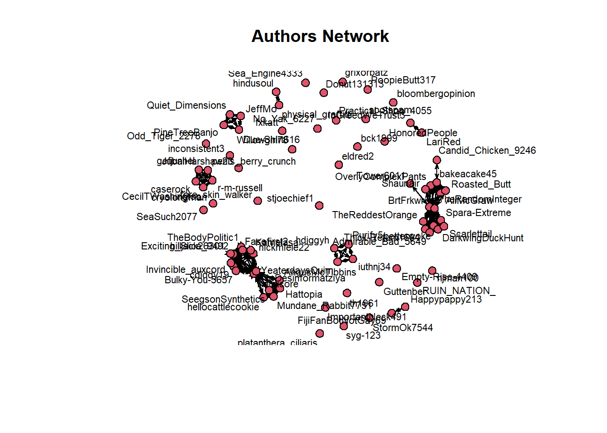
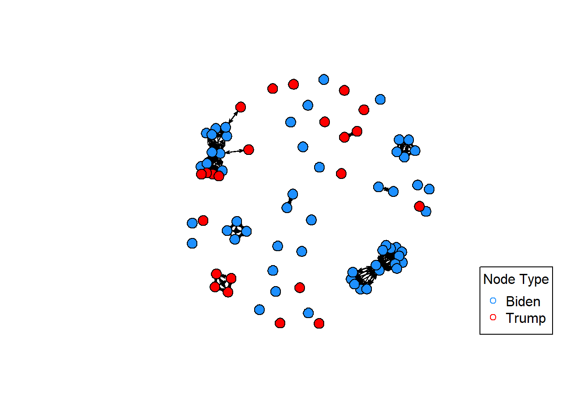
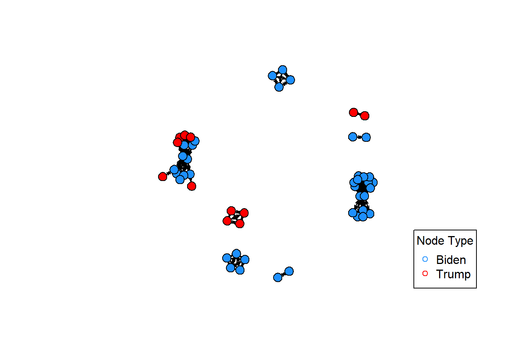

<!DOCTYPE html>
<html xmlns="http://www.w3.org/1999/xhtml" lang="en" xml:lang="en"><head>

<meta charset="utf-8">
<meta name="generator" content="quarto-1.3.353">

<meta name="viewport" content="width=device-width, initial-scale=1.0, user-scalable=yes">

<meta name="author" content="E. Song/ Felix Betancourt">
<meta name="dcterms.date" content="2024-04-30">

<title>FB Blog - DACSS - UMASS - Final Project FB - Post 3 Initial Network Analysis</title>
<style>
code{white-space: pre-wrap;}
span.smallcaps{font-variant: small-caps;}
div.columns{display: flex; gap: min(4vw, 1.5em);}
div.column{flex: auto; overflow-x: auto;}
div.hanging-indent{margin-left: 1.5em; text-indent: -1.5em;}
ul.task-list{list-style: none;}
ul.task-list li input[type="checkbox"] {
  width: 0.8em;
  margin: 0 0.8em 0.2em -1em; /* quarto-specific, see https://github.com/quarto-dev/quarto-cli/issues/4556 */ 
  vertical-align: middle;
}
/* CSS for syntax highlighting */
pre > code.sourceCode { white-space: pre; position: relative; }
pre > code.sourceCode > span { display: inline-block; line-height: 1.25; }
pre > code.sourceCode > span:empty { height: 1.2em; }
.sourceCode { overflow: visible; }
code.sourceCode > span { color: inherit; text-decoration: inherit; }
div.sourceCode { margin: 1em 0; }
pre.sourceCode { margin: 0; }
@media screen {
div.sourceCode { overflow: auto; }
}
@media print {
pre > code.sourceCode { white-space: pre-wrap; }
pre > code.sourceCode > span { text-indent: -5em; padding-left: 5em; }
}
pre.numberSource code
  { counter-reset: source-line 0; }
pre.numberSource code > span
  { position: relative; left: -4em; counter-increment: source-line; }
pre.numberSource code > span > a:first-child::before
  { content: counter(source-line);
    position: relative; left: -1em; text-align: right; vertical-align: baseline;
    border: none; display: inline-block;
    -webkit-touch-callout: none; -webkit-user-select: none;
    -khtml-user-select: none; -moz-user-select: none;
    -ms-user-select: none; user-select: none;
    padding: 0 4px; width: 4em;
  }
pre.numberSource { margin-left: 3em;  padding-left: 4px; }
div.sourceCode
  {   }
@media screen {
pre > code.sourceCode > span > a:first-child::before { text-decoration: underline; }
}
</style>


<script src="../../site_libs/quarto-nav/quarto-nav.js"></script>
<script src="../../site_libs/quarto-nav/headroom.min.js"></script>
<script src="../../site_libs/clipboard/clipboard.min.js"></script>
<script src="../../site_libs/quarto-search/autocomplete.umd.js"></script>
<script src="../../site_libs/quarto-search/fuse.min.js"></script>
<script src="../../site_libs/quarto-search/quarto-search.js"></script>
<meta name="quarto:offset" content="../../">
<script src="../../site_libs/quarto-html/quarto.js"></script>
<script src="../../site_libs/quarto-html/popper.min.js"></script>
<script src="../../site_libs/quarto-html/tippy.umd.min.js"></script>
<script src="../../site_libs/quarto-html/anchor.min.js"></script>
<link href="../../site_libs/quarto-html/tippy.css" rel="stylesheet">
<link href="../../site_libs/quarto-html/quarto-syntax-highlighting.css" rel="stylesheet" id="quarto-text-highlighting-styles">
<script src="../../site_libs/bootstrap/bootstrap.min.js"></script>
<link href="../../site_libs/bootstrap/bootstrap-icons.css" rel="stylesheet">
<link href="../../site_libs/bootstrap/bootstrap.min.css" rel="stylesheet" id="quarto-bootstrap" data-mode="light">
<script id="quarto-search-options" type="application/json">{
  "location": "navbar",
  "copy-button": false,
  "collapse-after": 3,
  "panel-placement": "end",
  "type": "overlay",
  "limit": 20,
  "language": {
    "search-no-results-text": "No results",
    "search-matching-documents-text": "matching documents",
    "search-copy-link-title": "Copy link to search",
    "search-hide-matches-text": "Hide additional matches",
    "search-more-match-text": "more match in this document",
    "search-more-matches-text": "more matches in this document",
    "search-clear-button-title": "Clear",
    "search-detached-cancel-button-title": "Cancel",
    "search-submit-button-title": "Submit"
  }
}</script>
<style>html{ scroll-behavior: smooth; }</style>


<link rel="stylesheet" href="../../styles.css">
</head>

<body class="floating nav-fixed">

<div id="quarto-search-results"></div>
  <header id="quarto-header" class="headroom fixed-top">
    <nav class="navbar navbar-expand-lg navbar-dark ">
      <div class="navbar-container container-fluid">
      <div class="navbar-brand-container">
    <a class="navbar-brand" href="../../index.html">
    <span class="navbar-title">FB Blog - DACSS - UMASS</span>
    </a>
  </div>
            <div id="quarto-search" class="" title="Search"></div>
          <button class="navbar-toggler" type="button" data-bs-toggle="collapse" data-bs-target="#navbarCollapse" aria-controls="navbarCollapse" aria-expanded="false" aria-label="Toggle navigation" onclick="if (window.quartoToggleHeadroom) { window.quartoToggleHeadroom(); }">
  <span class="navbar-toggler-icon"></span>
</button>
          <div class="collapse navbar-collapse" id="navbarCollapse">
            <ul class="navbar-nav navbar-nav-scroll ms-auto">
  <li class="nav-item">
    <a class="nav-link" href="../../about.html" rel="" target="">
 <span class="menu-text">About</span></a>
  </li>  
  <li class="nav-item compact">
    <a class="nav-link" href="https://github.com/" rel="" target=""><i class="bi bi-github" role="img">
</i> 
 <span class="menu-text"></span></a>
  </li>  
  <li class="nav-item compact">
    <a class="nav-link" href="https://twitter.com" rel="" target=""><i class="bi bi-twitter" role="img">
</i> 
 <span class="menu-text"></span></a>
  </li>  
</ul>
            <div class="quarto-navbar-tools">
</div>
          </div> <!-- /navcollapse -->
      </div> <!-- /container-fluid -->
    </nav>
</header>
<!-- content -->
<header id="title-block-header" class="quarto-title-block default toc-left page-columns page-full">
  <div class="quarto-title-banner page-columns page-full">
    <div class="quarto-title column-body">
      <h1 class="title">Final Project FB - Post 3 Initial Network Analysis</h1>
            <p class="subtitle lead">DACSS 695N Social Network Analysis</p>
                      </div>
  </div>
    
  
  <div class="quarto-title-meta">

      <div>
      <div class="quarto-title-meta-heading">Author</div>
      <div class="quarto-title-meta-contents">
               <p>E. Song/ Felix Betancourt </p>
            </div>
    </div>
      
      <div>
      <div class="quarto-title-meta-heading">Published</div>
      <div class="quarto-title-meta-contents">
        <p class="date">April 30, 2024</p>
      </div>
    </div>
    
      
    </div>
    
  
  </header><div id="quarto-content" class="quarto-container page-columns page-rows-contents page-layout-article page-navbar">
<!-- sidebar -->
  <nav id="quarto-sidebar" class="sidebar collapse collapse-horizontal sidebar-navigation floating overflow-auto">
    <nav id="TOC" role="doc-toc" class="toc-active">
    <h2 id="toc-title">Contents</h2>
   
  <ul class="collapse">
  <li><a href="#final-project---network-on-subreddit-rpolitics" id="toc-final-project---network-on-subreddit-rpolitics" class="nav-link active" data-scroll-target="#final-project---network-on-subreddit-rpolitics">Final Project - Network on subreddit r/politics</a></li>
  </ul>
</nav>
</nav>
<div id="quarto-sidebar-glass" data-bs-toggle="collapse" data-bs-target="#quarto-sidebar,#quarto-sidebar-glass"></div>
<!-- margin-sidebar -->
    <div id="quarto-margin-sidebar" class="sidebar margin-sidebar">
    </div>
<!-- main -->
<main class="content quarto-banner-title-block" id="quarto-document-content">


<section id="final-project---network-on-subreddit-rpolitics" class="level2">
<h2 class="anchored" data-anchor-id="final-project---network-on-subreddit-rpolitics">Final Project - Network on subreddit r/politics</h2>
<section id="introduction" class="level3">
<h3 class="anchored" data-anchor-id="introduction">Introduction</h3>
<p>I am interested in understanding how social media users influence each other and create communities around specific topics.</p>
<p>Specifically, I would like to explore this topic using Reddit to understand more in the context of domestic Politics.</p>
</section>
<section id="research-question" class="level3">
<h3 class="anchored" data-anchor-id="research-question">Research Question</h3>
<p>In particular:</p>
<ol type="1">
<li><p>How are Reddit users connected/related in the “Politics” subreddit (r/politics), particularly when it comes to topics related to Biden and Trump?</p></li>
<li><p>Are there different communities (networks) for Biden and Trump?</p></li>
<li><p>Is there a relationship between “upvotes” for a post, number of comments and how it is related to the key users in the network?</p></li>
</ol>
<div class="cell">
<div class="sourceCode cell-code" id="cb1"><pre class="sourceCode r code-with-copy"><code class="sourceCode r"><span id="cb1-1"><a href="#cb1-1" aria-hidden="true" tabindex="-1"></a><span class="fu">library</span>(tidytext)</span></code><button title="Copy to Clipboard" class="code-copy-button"><i class="bi"></i></button></pre></div>
<div class="cell-output cell-output-stderr">
<pre><code>Warning: package 'tidytext' was built under R version 4.3.3</code></pre>
</div>
<div class="sourceCode cell-code" id="cb3"><pre class="sourceCode r code-with-copy"><code class="sourceCode r"><span id="cb3-1"><a href="#cb3-1" aria-hidden="true" tabindex="-1"></a><span class="fu">library</span>(dplyr)</span></code><button title="Copy to Clipboard" class="code-copy-button"><i class="bi"></i></button></pre></div>
<div class="cell-output cell-output-stderr">
<pre><code>Warning: package 'dplyr' was built under R version 4.3.2</code></pre>
</div>
<div class="sourceCode cell-code" id="cb5"><pre class="sourceCode r code-with-copy"><code class="sourceCode r"><span id="cb5-1"><a href="#cb5-1" aria-hidden="true" tabindex="-1"></a><span class="fu">library</span>(tidyverse)</span></code><button title="Copy to Clipboard" class="code-copy-button"><i class="bi"></i></button></pre></div>
<div class="cell-output cell-output-stderr">
<pre><code>Warning: package 'tidyr' was built under R version 4.3.3</code></pre>
</div>
<div class="cell-output cell-output-stderr">
<pre><code>Warning: package 'readr' was built under R version 4.3.2</code></pre>
</div>
<div class="cell-output cell-output-stderr">
<pre><code>Warning: package 'stringr' was built under R version 4.3.2</code></pre>
</div>
<div class="cell-output cell-output-stderr">
<pre><code>Warning: package 'lubridate' was built under R version 4.3.2</code></pre>
</div>
<div class="sourceCode cell-code" id="cb10"><pre class="sourceCode r code-with-copy"><code class="sourceCode r"><span id="cb10-1"><a href="#cb10-1" aria-hidden="true" tabindex="-1"></a><span class="fu">library</span>(quanteda)</span>
<span id="cb10-2"><a href="#cb10-2" aria-hidden="true" tabindex="-1"></a><span class="fu">library</span>(quanteda.textplots)</span>
<span id="cb10-3"><a href="#cb10-3" aria-hidden="true" tabindex="-1"></a><span class="fu">library</span>(janitor)</span></code><button title="Copy to Clipboard" class="code-copy-button"><i class="bi"></i></button></pre></div>
<div class="cell-output cell-output-stderr">
<pre><code>Warning: package 'janitor' was built under R version 4.3.2</code></pre>
</div>
<div class="sourceCode cell-code" id="cb12"><pre class="sourceCode r code-with-copy"><code class="sourceCode r"><span id="cb12-1"><a href="#cb12-1" aria-hidden="true" tabindex="-1"></a><span class="co">#library(RedditExtractoR)</span></span>
<span id="cb12-2"><a href="#cb12-2" aria-hidden="true" tabindex="-1"></a><span class="fu">library</span>(RCurl)</span></code><button title="Copy to Clipboard" class="code-copy-button"><i class="bi"></i></button></pre></div>
<div class="cell-output cell-output-stderr">
<pre><code>Warning: package 'RCurl' was built under R version 4.3.2</code></pre>
</div>
<div class="sourceCode cell-code" id="cb14"><pre class="sourceCode r code-with-copy"><code class="sourceCode r"><span id="cb14-1"><a href="#cb14-1" aria-hidden="true" tabindex="-1"></a><span class="fu">library</span>(data.table)</span></code><button title="Copy to Clipboard" class="code-copy-button"><i class="bi"></i></button></pre></div>
<div class="cell-output cell-output-stderr">
<pre><code>Warning: package 'data.table' was built under R version 4.3.3</code></pre>
</div>
</div>
</section>
<section id="data" class="level3">
<h3 class="anchored" data-anchor-id="data">Data</h3>
<ol type="1">
<li>I scraped data from the Politics subreddit (r/politics) on April 2nd 2024 using R (RedditExtractoR package)</li>
</ol>
<p>The code below is inactive because it can take a lot of time to run it. So I already scrapped the data and saved the files as csv.</p>
<div class="cell">
<div class="sourceCode cell-code" id="cb16"><pre class="sourceCode r code-with-copy"><code class="sourceCode r"><span id="cb16-1"><a href="#cb16-1" aria-hidden="true" tabindex="-1"></a><span class="co">#politics_reddit &lt;- find_thread_urls(subreddit = "politics", sort_by="new", period = "day")</span></span>
<span id="cb16-2"><a href="#cb16-2" aria-hidden="true" tabindex="-1"></a></span>
<span id="cb16-3"><a href="#cb16-3" aria-hidden="true" tabindex="-1"></a><span class="co">#politics_reddit_comments &lt;- get_thread_content(politics_reddit$url)</span></span>
<span id="cb16-4"><a href="#cb16-4" aria-hidden="true" tabindex="-1"></a></span>
<span id="cb16-5"><a href="#cb16-5" aria-hidden="true" tabindex="-1"></a><span class="co">#Separate the lists into different objects</span></span>
<span id="cb16-6"><a href="#cb16-6" aria-hidden="true" tabindex="-1"></a></span>
<span id="cb16-7"><a href="#cb16-7" aria-hidden="true" tabindex="-1"></a><span class="co">#politics_list1 &lt;- politics_reddit_comments[[1]] </span></span>
<span id="cb16-8"><a href="#cb16-8" aria-hidden="true" tabindex="-1"></a><span class="co">#politics_list2 &lt;- politics_reddit_comments[[2]]</span></span>
<span id="cb16-9"><a href="#cb16-9" aria-hidden="true" tabindex="-1"></a></span>
<span id="cb16-10"><a href="#cb16-10" aria-hidden="true" tabindex="-1"></a><span class="do">### Saving all the lists in csv to avoid the need to scrap the data several times</span></span>
<span id="cb16-11"><a href="#cb16-11" aria-hidden="true" tabindex="-1"></a></span>
<span id="cb16-12"><a href="#cb16-12" aria-hidden="true" tabindex="-1"></a><span class="co">#write.csv(politics_reddit, file = "C:/Users/fbeta/OneDrive/1_UMASS_DACSS/695N - Social Network/R-695N-Network/Final Project/data/politics_comments1.csv")</span></span>
<span id="cb16-13"><a href="#cb16-13" aria-hidden="true" tabindex="-1"></a></span>
<span id="cb16-14"><a href="#cb16-14" aria-hidden="true" tabindex="-1"></a><span class="co">#write.csv(politics_list1, file = "C:/Users/fbeta/OneDrive/1_UMASS_DACSS/695N - Social Network/R-695N-Network/Final Project/data/politics_comments2.csv")</span></span>
<span id="cb16-15"><a href="#cb16-15" aria-hidden="true" tabindex="-1"></a></span>
<span id="cb16-16"><a href="#cb16-16" aria-hidden="true" tabindex="-1"></a><span class="co">#write.csv(politics_list2, file = "C:/Users/fbeta/OneDrive/1_UMASS_DACSS/695N - Social Network/R-695N-Network/Final Project/data/politics_comments3.csv")</span></span></code><button title="Copy to Clipboard" class="code-copy-button"><i class="bi"></i></button></pre></div>
</div>
<ol start="2" type="1">
<li>This subreddit has 8.5 million users, so the data can be very extensive, however the package used here (RedditExtractoR) pulled the last 1000 post.</li>
</ol>
<div class="cell">
<div class="sourceCode cell-code" id="cb17"><pre class="sourceCode r code-with-copy"><code class="sourceCode r"><span id="cb17-1"><a href="#cb17-1" aria-hidden="true" tabindex="-1"></a><span class="fu">getwd</span>()</span></code><button title="Copy to Clipboard" class="code-copy-button"><i class="bi"></i></button></pre></div>
<div class="cell-output cell-output-stdout">
<pre><code>[1] "C:/Users/fbeta/OneDrive/1_UMASS_DACSS/695N - Social Network/695NBlog_Felix_Betancourt/posts/Post 3 - Initial Analysis"</code></pre>
</div>
<div class="sourceCode cell-code" id="cb19"><pre class="sourceCode r code-with-copy"><code class="sourceCode r"><span id="cb19-1"><a href="#cb19-1" aria-hidden="true" tabindex="-1"></a><span class="co"># Read large CSV file using fread</span></span>
<span id="cb19-2"><a href="#cb19-2" aria-hidden="true" tabindex="-1"></a>politik1 <span class="ot">&lt;-</span> <span class="fu">fread</span>(<span class="st">"politics_comments1.csv"</span>)</span>
<span id="cb19-3"><a href="#cb19-3" aria-hidden="true" tabindex="-1"></a>politik2 <span class="ot">&lt;-</span> <span class="fu">fread</span>(<span class="st">"politics_comments2.csv"</span>)</span>
<span id="cb19-4"><a href="#cb19-4" aria-hidden="true" tabindex="-1"></a>politik3 <span class="ot">&lt;-</span> <span class="fu">fread</span>(<span class="st">"politics_comments3.csv"</span>)</span>
<span id="cb19-5"><a href="#cb19-5" aria-hidden="true" tabindex="-1"></a></span>
<span id="cb19-6"><a href="#cb19-6" aria-hidden="true" tabindex="-1"></a><span class="fu">glimpse</span>(politik1)</span></code><button title="Copy to Clipboard" class="code-copy-button"><i class="bi"></i></button></pre></div>
<div class="cell-output cell-output-stdout">
<pre><code>Rows: 983
Columns: 8
$ V1        &lt;chr&gt; "Supreme Court starts arguments as Biden administration defe…
$ date_utc  &lt;IDate&gt; 2024-03-26, 2024-03-26, 2024-03-26, 2024-03-26, 2024-03-26…
$ timestamp &lt;int&gt; 1711463500, 1711463310, 1711462666, 1711462651, 1711462570, …
$ title     &lt;chr&gt; "Supreme Court starts arguments as Biden administration defe…
$ text      &lt;chr&gt; "", "", "", "", "", "", "", "", "", "", "", "Oral argument i…
$ subreddit &lt;chr&gt; "politics", "politics", "politics", "politics", "politics", …
$ comments  &lt;int&gt; 34, 21, 194, 24, 43, 15, 150, 251, 18, 26, 10, 597, 27, 299,…
$ url       &lt;chr&gt; "https://www.reddit.com/r/politics/comments/1bo9ce0/supreme_…</code></pre>
</div>
<div class="sourceCode cell-code" id="cb21"><pre class="sourceCode r code-with-copy"><code class="sourceCode r"><span id="cb21-1"><a href="#cb21-1" aria-hidden="true" tabindex="-1"></a><span class="fu">head</span>(politik1)</span></code><button title="Copy to Clipboard" class="code-copy-button"><i class="bi"></i></button></pre></div>
<div class="cell-output cell-output-stdout">
<pre><code>                                                                                                   V1
                                                                                               &lt;char&gt;
1:                Supreme Court starts arguments as Biden administration defends abortion pill access
2:                               Why the Supreme Court abortion pill case is so fraught for the right
3:   2015 securities fraud charges against Texas AG Ken Paxton to be dropped in deal with prosecutors
4:                 Biden campaign calls Trump \030weak and desperate\031 after New York court hearing
5: Felony securities fraud charges against Attorney General Ken Paxton to be dropped after nine years
6:                                                     Trump Is Up to His Old Tricks to Pay His Bills
     date_utc  timestamp
       &lt;IDat&gt;      &lt;int&gt;
1: 2024-03-26 1711463500
2: 2024-03-26 1711463310
3: 2024-03-26 1711462666
4: 2024-03-26 1711462651
5: 2024-03-26 1711462570
6: 2024-03-26 1711462189
                                                                                                title
                                                                                               &lt;char&gt;
1:                Supreme Court starts arguments as Biden administration defends abortion pill access
2:                               Why the Supreme Court abortion pill case is so fraught for the right
3:   2015 securities fraud charges against Texas AG Ken Paxton to be dropped in deal with prosecutors
4:                 Biden campaign calls Trump \030weak and desperate\031 after New York court hearing
5: Felony securities fraud charges against Attorney General Ken Paxton to be dropped after nine years
6:                                                     Trump Is Up to His Old Tricks to Pay His Bills
     text subreddit comments
   &lt;char&gt;    &lt;char&gt;    &lt;int&gt;
1:         politics       34
2:         politics       21
3:         politics      194
4:         politics       24
5:         politics       43
6:         politics       15
                                                                                                    url
                                                                                                 &lt;char&gt;
1:          https://www.reddit.com/r/politics/comments/1bo9ce0/supreme_court_starts_arguments_as_biden/
2:   https://www.reddit.com/r/politics/comments/1bo99ng/why_the_supreme_court_abortion_pill_case_is_so/
3:   https://www.reddit.com/r/politics/comments/1bo90vd/2015_securities_fraud_charges_against_texas_ag/
4:    https://www.reddit.com/r/politics/comments/1bo90oj/biden_campaign_calls_trump_weak_and_desperate/
5: https://www.reddit.com/r/politics/comments/1bo8zhu/felony_securities_fraud_charges_against_attorney/
6:   https://www.reddit.com/r/politics/comments/1bo8u1n/trump_is_up_to_his_old_tricks_to_pay_his_bills/</code></pre>
</div>
<div class="sourceCode cell-code" id="cb23"><pre class="sourceCode r code-with-copy"><code class="sourceCode r"><span id="cb23-1"><a href="#cb23-1" aria-hidden="true" tabindex="-1"></a><span class="fu">glimpse</span>(politik2)</span></code><button title="Copy to Clipboard" class="code-copy-button"><i class="bi"></i></button></pre></div>
<div class="cell-output cell-output-stdout">
<pre><code>Rows: 983
Columns: 16
$ V1                    &lt;int&gt; 1, 2, 3, 4, 5, 6, 7, 8, 9, 10, 11, 12, 13, 14, 1…
$ url                   &lt;chr&gt; "https://www.reddit.com/r/politics/comments/1bo9…
$ author                &lt;chr&gt; "Cybertronian1512", "ban_hus", "coasterghost", "…
$ date                  &lt;chr&gt; "3/26/2024", "3/26/2024", "3/26/2024", "3/26/202…
$ timestamp             &lt;int&gt; 1711463500, 1711463310, 1711462666, 1711462651, …
$ title                 &lt;chr&gt; "Supreme Court starts arguments as Biden adminis…
$ text                  &lt;chr&gt; "", "", "", "", "", "", "", "", "", "", "", "Ora…
$ subreddit             &lt;chr&gt; "politics", "politics", "politics", "politics", …
$ score                 &lt;int&gt; 304, 127, 1250, 791, 421, 226, 4033, 4842, 197, …
$ upvotes               &lt;int&gt; 304, 127, 1250, 791, 421, 226, 4033, 4842, 197, …
$ downvotes             &lt;int&gt; 0, 0, 0, 0, 0, 0, 0, 0, 0, 0, 0, 0, 0, 0, 0, 0, …
$ up_ratio              &lt;dbl&gt; 0.95, 0.92, 0.95, 0.96, 0.91, 0.91, 0.97, 0.97, …
$ total_awards_received &lt;int&gt; 0, 0, 0, 0, 0, 0, 0, 0, 0, 0, 0, 0, 0, 0, 0, 0, …
$ golds                 &lt;int&gt; 0, 0, 0, 0, 0, 0, 0, 0, 0, 0, 0, 0, 0, 0, 0, 0, …
$ cross_posts           &lt;int&gt; 0, 0, 0, 0, 0, 0, 2, 0, 0, 1, 0, 0, 0, 1, 1, 0, …
$ comments              &lt;int&gt; 34, 21, 194, 24, 43, 15, 150, 250, 18, 26, 10, 5…</code></pre>
</div>
<div class="sourceCode cell-code" id="cb25"><pre class="sourceCode r code-with-copy"><code class="sourceCode r"><span id="cb25-1"><a href="#cb25-1" aria-hidden="true" tabindex="-1"></a><span class="fu">head</span>(politik2)</span></code><button title="Copy to Clipboard" class="code-copy-button"><i class="bi"></i></button></pre></div>
<div class="cell-output cell-output-stdout">
<pre><code>      V1
   &lt;int&gt;
1:     1
2:     2
3:     3
4:     4
5:     5
6:     6
                                                                                                    url
                                                                                                 &lt;char&gt;
1:          https://www.reddit.com/r/politics/comments/1bo9ce0/supreme_court_starts_arguments_as_biden/
2:   https://www.reddit.com/r/politics/comments/1bo99ng/why_the_supreme_court_abortion_pill_case_is_so/
3:   https://www.reddit.com/r/politics/comments/1bo90vd/2015_securities_fraud_charges_against_texas_ag/
4:    https://www.reddit.com/r/politics/comments/1bo90oj/biden_campaign_calls_trump_weak_and_desperate/
5: https://www.reddit.com/r/politics/comments/1bo8zhu/felony_securities_fraud_charges_against_attorney/
6:   https://www.reddit.com/r/politics/comments/1bo8u1n/trump_is_up_to_his_old_tricks_to_pay_his_bills/
              author      date  timestamp
              &lt;char&gt;    &lt;char&gt;      &lt;int&gt;
1:  Cybertronian1512 3/26/2024 1711463500
2:           ban_hus 3/26/2024 1711463310
3:      coasterghost 3/26/2024 1711462666
4:           Quirkie 3/26/2024 1711462651
5:      texastribune 3/26/2024 1711462570
6: thenationmagazine 3/26/2024 1711462189
                                                                                                title
                                                                                               &lt;char&gt;
1:                Supreme Court starts arguments as Biden administration defends abortion pill access
2:                               Why the Supreme Court abortion pill case is so fraught for the right
3:   2015 securities fraud charges against Texas AG Ken Paxton to be dropped in deal with prosecutors
4:                 Biden campaign calls Trump \030weak and desperate\031 after New York court hearing
5: Felony securities fraud charges against Attorney General Ken Paxton to be dropped after nine years
6:                                                     Trump Is Up to His Old Tricks to Pay His Bills
     text subreddit score upvotes downvotes up_ratio total_awards_received
   &lt;char&gt;    &lt;char&gt; &lt;int&gt;   &lt;int&gt;     &lt;int&gt;    &lt;num&gt;                 &lt;int&gt;
1:         politics   304     304         0     0.95                     0
2:         politics   127     127         0     0.92                     0
3:         politics  1250    1250         0     0.95                     0
4:         politics   791     791         0     0.96                     0
5:         politics   421     421         0     0.91                     0
6:         politics   226     226         0     0.91                     0
   golds cross_posts comments
   &lt;int&gt;       &lt;int&gt;    &lt;int&gt;
1:     0           0       34
2:     0           0       21
3:     0           0      194
4:     0           0       24
5:     0           0       43
6:     0           0       15</code></pre>
</div>
<div class="sourceCode cell-code" id="cb27"><pre class="sourceCode r code-with-copy"><code class="sourceCode r"><span id="cb27-1"><a href="#cb27-1" aria-hidden="true" tabindex="-1"></a><span class="fu">glimpse</span>(politik3)</span></code><button title="Copy to Clipboard" class="code-copy-button"><i class="bi"></i></button></pre></div>
<div class="cell-output cell-output-stdout">
<pre><code>Rows: 95,879
Columns: 11
$ V1         &lt;int&gt; 1, 2, 3, 4, 5, 6, 7, 8, 9, 10, 11, 12, 13, 14, 15, 16, 17, …
$ url        &lt;chr&gt; "https://www.reddit.com/r/politics/comments/1bo9ce0/supreme…
$ author     &lt;chr&gt; "AutoModerator", "EmmaLouLove", "ctguy54", "EmmaLouLove", "…
$ date       &lt;chr&gt; "3/26/2024", "3/26/2024", "3/26/2024", "3/26/2024", "3/26/2…
$ timestamp  &lt;int&gt; 1711463501, 1711465125, 1711466287, 1711466455, 1711467091,…
$ score      &lt;int&gt; 1, 79, 41, 13, 19, 13, 7, 6, 3, 4, 1, 4, 2, 5, 5, 1, 1, 28,…
$ upvotes    &lt;int&gt; 1, 79, 41, 13, 19, 13, 7, 6, 3, 4, 1, 4, 2, 5, 5, 1, 1, 28,…
$ downvotes  &lt;int&gt; 0, 0, 0, 0, 0, 0, 0, 0, 0, 0, 0, 0, 0, 0, 0, 0, 0, 0, 0, 0,…
$ golds      &lt;int&gt; 0, 0, 0, 0, 0, 0, 0, 0, 0, 0, 0, 0, 0, 0, 0, 0, 0, 0, 0, 0,…
$ comment    &lt;chr&gt; "\r\nAs a reminder, this subreddit [is for civil discussion…
$ comment_id &lt;chr&gt; "1", "2", "2_1", "2_1_1", "2_1_1_1", "2_1_1_1_1", "2_1_1_1_…</code></pre>
</div>
<div class="sourceCode cell-code" id="cb29"><pre class="sourceCode r code-with-copy"><code class="sourceCode r"><span id="cb29-1"><a href="#cb29-1" aria-hidden="true" tabindex="-1"></a><span class="fu">head</span>(politik3)</span></code><button title="Copy to Clipboard" class="code-copy-button"><i class="bi"></i></button></pre></div>
<div class="cell-output cell-output-stdout">
<pre><code>      V1
   &lt;int&gt;
1:     1
2:     2
3:     3
4:     4
5:     5
6:     6
                                                                                           url
                                                                                        &lt;char&gt;
1: https://www.reddit.com/r/politics/comments/1bo9ce0/supreme_court_starts_arguments_as_biden/
2: https://www.reddit.com/r/politics/comments/1bo9ce0/supreme_court_starts_arguments_as_biden/
3: https://www.reddit.com/r/politics/comments/1bo9ce0/supreme_court_starts_arguments_as_biden/
4: https://www.reddit.com/r/politics/comments/1bo9ce0/supreme_court_starts_arguments_as_biden/
5: https://www.reddit.com/r/politics/comments/1bo9ce0/supreme_court_starts_arguments_as_biden/
6: https://www.reddit.com/r/politics/comments/1bo9ce0/supreme_court_starts_arguments_as_biden/
          author      date  timestamp score upvotes downvotes golds
          &lt;char&gt;    &lt;char&gt;      &lt;int&gt; &lt;int&gt;   &lt;int&gt;     &lt;int&gt; &lt;int&gt;
1: AutoModerator 3/26/2024 1711463501     1       1         0     0
2:   EmmaLouLove 3/26/2024 1711465125    79      79         0     0
3:       ctguy54 3/26/2024 1711466287    41      41         0     0
4:   EmmaLouLove 3/26/2024 1711466455    13      13         0     0
5:        msfamf 3/26/2024 1711467091    19      19         0     0
6:   EmmaLouLove 3/26/2024 1711467635    13      13         0     0
                                                                                                                                                                                                                                                                                                                                                                                                                                                                                                                                                                                                                                                                                                                                                                                                                                                                                                                                                                                                                                                                                                                                                                                                       comment
                                                                                                                                                                                                                                                                                                                                                                                                                                                                                                                                                                                                                                                                                                                                                                                                                                                                                                                                                                                                                                                                                                                                                                                                        &lt;char&gt;
1: \r\nAs a reminder, this subreddit [is for civil discussion.](/r/politics/wiki/index#wiki_be_civil)\r\n\r\nIn general, be courteous to others. Debate/discuss/argue the merits of ideas, don't attack people. Personal insults, shill or troll accusations, hate speech, any suggestion or support of harm, violence, or death, and other rule violations can result in a permanent ban. \r\n\r\nIf you see comments in violation of our rules, please report them.\r\n\r\n For those who have questions regarding any media outlets being posted on this subreddit, please click [here](https://www.reddit.com/r/politics/wiki/approveddomainslist) to review our details as to our approved domains list and outlet criteria.\r\n \r\n We are actively looking for new moderators.  If you have any interest in helping to make this subreddit a place for quality discussion, please fill out [this form](https://docs.google.com/forms/d/1y2swHD0KXFhStGFjW6k54r9iuMjzcFqDIVwuvdLBjSA).\r\n \r\n\r\n***\r\n\r\n\r\n*I am a bot, and this action was performed automatically. Please [contact the moderators of this subreddit](/message/compose/?to=/r/politics) if you have any questions or concerns.*
2:                                                                                                                                                                                                                                                                                                                                                                                                                                                                                                                                                                                                                                                                                                                                                                                                                                                                                                                                                                                                                              US Solicitor General Elizabeth Prelogar reminded the Supreme Court the courts have no business questioning the FDA\031s expertise on whether a drug should be approved or not.
3:                                                                                                                                                                                                                                                                                                                                                                                                                                                                                                                                                                                                                                                                                                                                                                                                                                                                                                                                                                                                                                  This will not stop the conservatives on the court from believing that they know best. \r\n\r\nNext the court will decide whether you can take aspirin, Tylenol, or Motrin.
4:                                                                                                                                                                                                                                                                                                                                                                                                                                                                                                                                                                                                                                                                                                                                                                                                                                                                                                                           I am guessing even this SCOTUS knows that inserting themselves into FDA decisions will cause the floodgates to open.  What would be the next drug that would be brought before them?  It could be any drug advertised with the multiple warnings of side effects including death.
5:                                                                                                                                                                                                                                                                                                                                                                                                                                                                                                                                                                                                                                                                                                                                                                                                                                                                                                                                                                                                                                           &amp;gt;What would be the next drug that would be brought before them? \r\n\r\nIf current trends and Republican talking points are any indication it's birth control.
6:                                                                                                                                                                                                                                                                                                                                                                                                                                                                                                                                                           True.  There is an ongoing attack by the conservative justices on Americans\031 personal privacy rights.  \r\n\r\nClarence Thomas called for overturning the constitutional rights the court had affirmed for access to contraceptives and LGBTQ rights in his Roe opinion.  \034In future cases, we should reconsider all of this Court\031s substantive due process precedents, including Griswold, Lawrence, and Obergefell.\035\r\n\r\nRepublicans seem hellbent on inserting themselves into anything they don\031t agree with, whether it be food for needy children or a woman\031s autonomy.  People should remember this when they vote.
   comment_id
       &lt;char&gt;
1:          1
2:          2
3:        2_1
4:      2_1_1
5:    2_1_1_1
6:  2_1_1_1_1</code></pre>
</div>
</div>
<p>As we can see the the information in object “politik1” is redundant with the information in “politik2” so I won’t use “politik1” at all. “Politik2” contain information about the title of the post, author, and some numeric information like up/down votes, number of replies to the post. “politik3” contain detailed comments on each post and the hierarchical sequence of comments to each post.</p>
<p>I’ll use Text as Data methods to identify key words in the title of the posts (like Biden-Trump, or other topics of interest).</p>
<p>Let’s do some data wrangling first:</p>
<div class="cell">
<div class="sourceCode cell-code" id="cb31"><pre class="sourceCode r code-with-copy"><code class="sourceCode r"><span id="cb31-1"><a href="#cb31-1" aria-hidden="true" tabindex="-1"></a><span class="co"># Cleaning and wrangling</span></span>
<span id="cb31-2"><a href="#cb31-2" aria-hidden="true" tabindex="-1"></a></span>
<span id="cb31-3"><a href="#cb31-3" aria-hidden="true" tabindex="-1"></a>politik_df <span class="ot">&lt;-</span> politik2 <span class="sc">%&gt;%</span> <span class="fu">select</span>(<span class="sc">-</span>V1, <span class="sc">-</span>timestamp) <span class="co">#eliminating non-relevant columns</span></span>
<span id="cb31-4"><a href="#cb31-4" aria-hidden="true" tabindex="-1"></a>politik_df <span class="ot">&lt;-</span> <span class="fu">as_tibble</span>(politik_df)</span>
<span id="cb31-5"><a href="#cb31-5" aria-hidden="true" tabindex="-1"></a>politik_df<span class="sc">$</span>date <span class="ot">&lt;-</span> <span class="fu">as.Date</span>(politik_df<span class="sc">$</span>date, <span class="at">format =</span> <span class="st">"%m/%d/%Y"</span>)</span>
<span id="cb31-6"><a href="#cb31-6" aria-hidden="true" tabindex="-1"></a></span>
<span id="cb31-7"><a href="#cb31-7" aria-hidden="true" tabindex="-1"></a></span>
<span id="cb31-8"><a href="#cb31-8" aria-hidden="true" tabindex="-1"></a>politik_df2 <span class="ot">&lt;-</span> politik3 <span class="sc">%&gt;%</span> <span class="fu">select</span>(<span class="sc">-</span>V1, <span class="sc">-</span>timestamp) <span class="co">#eliminating non-relevant columns</span></span>
<span id="cb31-9"><a href="#cb31-9" aria-hidden="true" tabindex="-1"></a>politik_df2 <span class="ot">&lt;-</span> <span class="fu">as_tibble</span>(politik_df2)</span>
<span id="cb31-10"><a href="#cb31-10" aria-hidden="true" tabindex="-1"></a>politik_df2<span class="sc">$</span>date <span class="ot">&lt;-</span> <span class="fu">as.Date</span>(politik_df2<span class="sc">$</span>date, <span class="at">format =</span> <span class="st">"%m/%d/%Y"</span>)</span></code><button title="Copy to Clipboard" class="code-copy-button"><i class="bi"></i></button></pre></div>
</div>
<p>Looking at the comments from user “Automoderator”, it is like a Reddit moderator bot reminding rules of the forum, so I’ll delete the rows belonging to AutoModerator”. Also there are few commments where the author was “deleted”.</p>
<div class="cell">
<div class="sourceCode cell-code" id="cb32"><pre class="sourceCode r code-with-copy"><code class="sourceCode r"><span id="cb32-1"><a href="#cb32-1" aria-hidden="true" tabindex="-1"></a>politik_df2 <span class="ot">&lt;-</span> politik_df2[<span class="sc">-</span>(<span class="fu">which</span>(politik_df2<span class="sc">$</span>author <span class="sc">%in%</span> <span class="st">"AutoModerator"</span>)),]</span>
<span id="cb32-2"><a href="#cb32-2" aria-hidden="true" tabindex="-1"></a>politik_df3 <span class="ot">&lt;-</span> politik_df2[<span class="sc">-</span>(<span class="fu">which</span>(politik_df2<span class="sc">$</span>author <span class="sc">%in%</span> <span class="st">"[deleted]"</span>)),]</span>
<span id="cb32-3"><a href="#cb32-3" aria-hidden="true" tabindex="-1"></a><span class="fu">length</span>(<span class="fu">unique</span>(politik3<span class="sc">$</span>url))</span></code><button title="Copy to Clipboard" class="code-copy-button"><i class="bi"></i></button></pre></div>
<div class="cell-output cell-output-stdout">
<pre><code>[1] 983</code></pre>
</div>
</div>
<p>Let’s explore a bit about the authors.</p>
<div class="cell">
<div class="sourceCode cell-code" id="cb34"><pre class="sourceCode r code-with-copy"><code class="sourceCode r"><span id="cb34-1"><a href="#cb34-1" aria-hidden="true" tabindex="-1"></a><span class="co">#let's create some tables to see frequencies and totals</span></span>
<span id="cb34-2"><a href="#cb34-2" aria-hidden="true" tabindex="-1"></a></span>
<span id="cb34-3"><a href="#cb34-3" aria-hidden="true" tabindex="-1"></a><span class="co">#first I created a count column</span></span>
<span id="cb34-4"><a href="#cb34-4" aria-hidden="true" tabindex="-1"></a>politik_df3 <span class="ot">&lt;-</span> politik_df3 <span class="sc">%&gt;%</span> <span class="fu">mutate</span>(<span class="at">countid =</span> <span class="st">"1"</span>)</span>
<span id="cb34-5"><a href="#cb34-5" aria-hidden="true" tabindex="-1"></a>politik_df3<span class="sc">$</span>countid <span class="ot">&lt;-</span> <span class="fu">as.numeric</span>(politik_df3<span class="sc">$</span>countid)</span>
<span id="cb34-6"><a href="#cb34-6" aria-hidden="true" tabindex="-1"></a></span>
<span id="cb34-7"><a href="#cb34-7" aria-hidden="true" tabindex="-1"></a><span class="co">#preparing tables</span></span>
<span id="cb34-8"><a href="#cb34-8" aria-hidden="true" tabindex="-1"></a><span class="fu">library</span>(data.table)</span>
<span id="cb34-9"><a href="#cb34-9" aria-hidden="true" tabindex="-1"></a>politik_table2 <span class="ot">&lt;-</span> <span class="fu">data.table</span>(politik_df3)</span>
<span id="cb34-10"><a href="#cb34-10" aria-hidden="true" tabindex="-1"></a></span>
<span id="cb34-11"><a href="#cb34-11" aria-hidden="true" tabindex="-1"></a><span class="co">#total posts grouped by author</span></span>
<span id="cb34-12"><a href="#cb34-12" aria-hidden="true" tabindex="-1"></a>count_table2 <span class="ot">&lt;-</span> politik_table2 <span class="sc">%&gt;%</span> <span class="fu">group_by</span>(author) <span class="sc">%&gt;%</span> <span class="fu">summarise</span>(<span class="at">Total_posts =</span> <span class="fu">sum</span>(countid))</span>
<span id="cb34-13"><a href="#cb34-13" aria-hidden="true" tabindex="-1"></a>count_table2 <span class="ot">&lt;-</span> count_table2 <span class="sc">%&gt;%</span> <span class="fu">arrange</span>(<span class="fu">desc</span>(Total_posts))</span>
<span id="cb34-14"><a href="#cb34-14" aria-hidden="true" tabindex="-1"></a><span class="fu">print</span>(count_table2)</span></code><button title="Copy to Clipboard" class="code-copy-button"><i class="bi"></i></button></pre></div>
<div class="cell-output cell-output-stdout">
<pre><code># A tibble: 31,554 × 2
   author               Total_posts
   &lt;chr&gt;                      &lt;dbl&gt;
 1 Numerous_Photograph9         304
 2 Logical_Parameters           223
 3 JubalHarshaw23               188
 4 BrtFrkwr                     178
 5 Due-Shirt616                 148
 6 TintedApostle                148
 7 Alistazia                    142
 8 LibertyInaFeatherBed         121
 9 grixorbatz                   118
10 RickyWinterborn-1080          97
# ℹ 31,544 more rows</code></pre>
</div>
<div class="sourceCode cell-code" id="cb36"><pre class="sourceCode r code-with-copy"><code class="sourceCode r"><span id="cb36-1"><a href="#cb36-1" aria-hidden="true" tabindex="-1"></a>summary_votes <span class="ot">&lt;-</span> politik_table2 <span class="sc">%&gt;%</span> <span class="fu">group_by</span>(author) <span class="sc">%&gt;%</span> <span class="fu">summarize</span>(<span class="at">Total_Score =</span> <span class="fu">sum</span>(score))</span>
<span id="cb36-2"><a href="#cb36-2" aria-hidden="true" tabindex="-1"></a>summary_votes <span class="ot">&lt;-</span> summary_votes <span class="sc">%&gt;%</span> <span class="fu">arrange</span>(<span class="fu">desc</span>(Total_Score))</span>
<span id="cb36-3"><a href="#cb36-3" aria-hidden="true" tabindex="-1"></a><span class="fu">print</span>(summary_votes)</span></code><button title="Copy to Clipboard" class="code-copy-button"><i class="bi"></i></button></pre></div>
<div class="cell-output cell-output-stdout">
<pre><code># A tibble: 31,554 × 2
   author             Total_Score
   &lt;chr&gt;                    &lt;int&gt;
 1 Jackinapox               15912
 2 jackleggjr               12829
 3 tracch                   12462
 4 OsellusK                 11978
 5 BlotchComics             11743
 6 BukkitCrab               11161
 7 OppositeDifference       10184
 8 zsreport                  8899
 9 JubalHarshaw23            8694
10 AngusMcTibbins            8477
# ℹ 31,544 more rows</code></pre>
</div>
<div class="sourceCode cell-code" id="cb38"><pre class="sourceCode r code-with-copy"><code class="sourceCode r"><span id="cb38-1"><a href="#cb38-1" aria-hidden="true" tabindex="-1"></a><span class="co">#Upvotes as a proportion of comments</span></span>
<span id="cb38-2"><a href="#cb38-2" aria-hidden="true" tabindex="-1"></a>summary_votes_ratio <span class="ot">&lt;-</span> politik_table2 <span class="sc">%&gt;%</span> <span class="fu">group_by</span>(author) <span class="sc">%&gt;%</span> <span class="fu">summarize</span>(<span class="at">Ratio_upvotes_per_comment =</span> <span class="fu">sum</span>(upvotes)<span class="sc">/</span><span class="fu">sum</span>(countid))</span>
<span id="cb38-3"><a href="#cb38-3" aria-hidden="true" tabindex="-1"></a>summary_votes_ratio <span class="ot">&lt;-</span> summary_votes_ratio <span class="sc">%&gt;%</span> <span class="fu">arrange</span>(<span class="fu">desc</span>(Ratio_upvotes_per_comment))</span>
<span id="cb38-4"><a href="#cb38-4" aria-hidden="true" tabindex="-1"></a><span class="fu">print</span>(summary_votes_ratio)</span></code><button title="Copy to Clipboard" class="code-copy-button"><i class="bi"></i></button></pre></div>
<div class="cell-output cell-output-stdout">
<pre><code># A tibble: 31,554 × 2
   author             Ratio_upvotes_per_comment
   &lt;chr&gt;                                  &lt;dbl&gt;
 1 tracch                                 6231 
 2 IMissChannel76                         4573 
 3 TheDudeBeto                            3892 
 4 Mikraphonechekka12                     3728 
 5 OokLeeNooma                            2746.
 6 giddyviewer                            2341 
 7 pottymcnugg                            2340 
 8 Fairymask                              2277 
 9 Manikin_Maker                          2177 
10 torspice                               2064 
# ℹ 31,544 more rows</code></pre>
</div>
<div class="sourceCode cell-code" id="cb40"><pre class="sourceCode r code-with-copy"><code class="sourceCode r"><span id="cb40-1"><a href="#cb40-1" aria-hidden="true" tabindex="-1"></a><span class="co">#How many authors (nodes) we have here?</span></span>
<span id="cb40-2"><a href="#cb40-2" aria-hidden="true" tabindex="-1"></a><span class="fu">length</span>(<span class="fu">unique</span>(politik_df3<span class="sc">$</span>author))</span></code><button title="Copy to Clipboard" class="code-copy-button"><i class="bi"></i></button></pre></div>
<div class="cell-output cell-output-stdout">
<pre><code>[1] 31554</code></pre>
</div>
</div>
<p>In the data set there are about +31k users/authors (nodes), which is way too much nodes for the purpose of my research, so I’ll select a sample of posts to analyze.</p>
<p>I’ll select the top 1% posts with more comments.</p>
<div class="cell">
<div class="sourceCode cell-code" id="cb42"><pre class="sourceCode r code-with-copy"><code class="sourceCode r"><span id="cb42-1"><a href="#cb42-1" aria-hidden="true" tabindex="-1"></a><span class="co">#first let's see the distribution of number of comments</span></span>
<span id="cb42-2"><a href="#cb42-2" aria-hidden="true" tabindex="-1"></a>percentiles <span class="ot">&lt;-</span> <span class="fu">quantile</span>(politik_df<span class="sc">$</span>comments, <span class="at">probs =</span> <span class="fu">c</span>(<span class="fl">0.25</span>, <span class="fl">0.50</span>, <span class="fl">0.75</span>, <span class="fl">0.90</span>, <span class="fl">0.95</span>, <span class="fl">0.99</span>))</span>
<span id="cb42-3"><a href="#cb42-3" aria-hidden="true" tabindex="-1"></a><span class="fu">print</span>(percentiles)</span></code><button title="Copy to Clipboard" class="code-copy-button"><i class="bi"></i></button></pre></div>
<div class="cell-output cell-output-stdout">
<pre><code>   25%    50%    75%    90%    95%    99% 
  20.0   46.0  115.0  338.6  576.2 1439.1 </code></pre>
</div>
</div>
<p>Let’s subset the df with the top 1% posts in terms of comments and let’s see how many posts we have.</p>
<div class="cell">
<div class="sourceCode cell-code" id="cb44"><pre class="sourceCode r code-with-copy"><code class="sourceCode r"><span id="cb44-1"><a href="#cb44-1" aria-hidden="true" tabindex="-1"></a>subset_politik2 <span class="ot">&lt;-</span> <span class="fu">subset</span>(politik_df, comments <span class="sc">&gt;=</span> <span class="dv">1439</span> )</span>
<span id="cb44-2"><a href="#cb44-2" aria-hidden="true" tabindex="-1"></a><span class="fu">glimpse</span>(subset_politik2)</span></code><button title="Copy to Clipboard" class="code-copy-button"><i class="bi"></i></button></pre></div>
<div class="cell-output cell-output-stdout">
<pre><code>Rows: 10
Columns: 14
$ url                   &lt;chr&gt; "https://www.reddit.com/r/politics/comments/1bo5…
$ author                &lt;chr&gt; "newsweek", "thenewrepublic", "UWCG", "twenafees…
$ date                  &lt;date&gt; 2024-03-26, 2024-03-26, 2024-03-27, 2024-03-27,…
$ title                 &lt;chr&gt; "Letitia James fires back after Donald Trump's b…
$ text                  &lt;chr&gt; "", "", "", "", "", "", "", "", "", ""
$ subreddit             &lt;chr&gt; "politics", "politics", "politics", "politics", …
$ score                 &lt;int&gt; 12409, 28546, 32935, 25237, 13487, 14411, 17102,…
$ upvotes               &lt;int&gt; 12409, 28546, 32935, 25237, 13487, 14411, 17102,…
$ downvotes             &lt;int&gt; 0, 0, 0, 0, 0, 0, 0, 0, 0, 0
$ up_ratio              &lt;dbl&gt; 0.92, 0.93, 0.91, 0.93, 0.91, 0.91, 0.91, 0.94, …
$ total_awards_received &lt;int&gt; 0, 0, 0, 0, 0, 0, 0, 0, 0, 0
$ golds                 &lt;int&gt; 0, 0, 0, 0, 0, 0, 0, 0, 0, 0
$ cross_posts           &lt;int&gt; 1, 2, 5, 7, 9, 2, 3, 3, 6, 3
$ comments              &lt;int&gt; 1476, 2018, 3564, 2419, 1523, 1677, 2291, 1668, …</code></pre>
</div>
<div class="sourceCode cell-code" id="cb46"><pre class="sourceCode r code-with-copy"><code class="sourceCode r"><span id="cb46-1"><a href="#cb46-1" aria-hidden="true" tabindex="-1"></a><span class="fu">length</span>(<span class="fu">unique</span>(subset_politik2<span class="sc">$</span>author))</span></code><button title="Copy to Clipboard" class="code-copy-button"><i class="bi"></i></button></pre></div>
<div class="cell-output cell-output-stdout">
<pre><code>[1] 10</code></pre>
</div>
</div>
<p>We got a df with 10 original posts and 10 authors, this is now a more “reasonable” data frame to analyze.</p>
<p>Now I need to identify these post into the “politik_df3” df which contain all the hierarchical comments network.</p>
<div class="cell">
<div class="sourceCode cell-code" id="cb48"><pre class="sourceCode r code-with-copy"><code class="sourceCode r"><span id="cb48-1"><a href="#cb48-1" aria-hidden="true" tabindex="-1"></a>subset_politik3 <span class="ot">&lt;-</span> politik_df3 <span class="sc">%&gt;%</span></span>
<span id="cb48-2"><a href="#cb48-2" aria-hidden="true" tabindex="-1"></a>         <span class="fu">filter</span>(url <span class="sc">%in%</span> subset_politik2<span class="sc">$</span>url)</span>
<span id="cb48-3"><a href="#cb48-3" aria-hidden="true" tabindex="-1"></a></span>
<span id="cb48-4"><a href="#cb48-4" aria-hidden="true" tabindex="-1"></a><span class="co">#let's see the df now </span></span>
<span id="cb48-5"><a href="#cb48-5" aria-hidden="true" tabindex="-1"></a><span class="fu">glimpse</span>(subset_politik3)</span></code><button title="Copy to Clipboard" class="code-copy-button"><i class="bi"></i></button></pre></div>
<div class="cell-output cell-output-stdout">
<pre><code>Rows: 4,902
Columns: 10
$ url        &lt;chr&gt; "https://www.reddit.com/r/politics/comments/1bo5tnj/letitia…
$ author     &lt;chr&gt; "OokLeeNooma", "AusToddles", "dancode", "GrafZeppelin127", …
$ date       &lt;date&gt; 2024-03-26, 2024-03-26, 2024-03-26, 2024-03-26, 2024-03-26…
$ score      &lt;int&gt; 5480, 2444, 1054, 871, 792, 414, 212, 31, 2, 3, 8, 26, 3, 3…
$ upvotes    &lt;int&gt; 5480, 2444, 1054, 871, 792, 414, 212, 31, 2, 3, 8, 26, 3, 3…
$ downvotes  &lt;int&gt; 0, 0, 0, 0, 0, 0, 0, 0, 0, 0, 0, 0, 0, 0, 0, 0, 0, 0, 0, 0,…
$ golds      &lt;int&gt; 0, 0, 0, 0, 0, 0, 0, 0, 0, 0, 0, 0, 0, 0, 0, 0, 0, 0, 0, 0,…
$ comment    &lt;chr&gt; "\"\"Donald Trump is still facing accountability for his st…
$ comment_id &lt;chr&gt; "2", "2_1", "2_1_1_1", "2_1_1_1_1", "2_1_1_1_1_1", "2_1_1_1…
$ countid    &lt;dbl&gt; 1, 1, 1, 1, 1, 1, 1, 1, 1, 1, 1, 1, 1, 1, 1, 1, 1, 1, 1, 1,…</code></pre>
</div>
</div>
<div class="cell">
<div class="sourceCode cell-code" id="cb50"><pre class="sourceCode r code-with-copy"><code class="sourceCode r"><span id="cb50-1"><a href="#cb50-1" aria-hidden="true" tabindex="-1"></a><span class="co">#how many nodes (authors)?</span></span>
<span id="cb50-2"><a href="#cb50-2" aria-hidden="true" tabindex="-1"></a><span class="fu">length</span>(<span class="fu">unique</span>(subset_politik3<span class="sc">$</span>author))</span></code><button title="Copy to Clipboard" class="code-copy-button"><i class="bi"></i></button></pre></div>
<div class="cell-output cell-output-stdout">
<pre><code>[1] 3869</code></pre>
</div>
</div>
<p>We got 982 posts but still +3.8k nodes, it sounds still high number of nodes.</p>
<p>I’ll need a different approach.</p>
<p>I’ll select 2 posts with a “median” number of comments. One post will be about Trump and another about Biden.</p>
<div class="cell">
<div class="sourceCode cell-code" id="cb52"><pre class="sourceCode r code-with-copy"><code class="sourceCode r"><span id="cb52-1"><a href="#cb52-1" aria-hidden="true" tabindex="-1"></a><span class="co">#First selecting posts with "Trump" or "Biden" included in the title of the post</span></span>
<span id="cb52-2"><a href="#cb52-2" aria-hidden="true" tabindex="-1"></a><span class="co">#Filtering the titles that contain Trump</span></span>
<span id="cb52-3"><a href="#cb52-3" aria-hidden="true" tabindex="-1"></a>trump_df <span class="ot">&lt;-</span> politik_df <span class="sc">%&gt;%</span> <span class="fu">filter</span>(<span class="fu">grepl</span>(<span class="st">"Trump"</span>, title))</span></code><button title="Copy to Clipboard" class="code-copy-button"><i class="bi"></i></button></pre></div>
<div class="cell-output cell-output-stderr">
<pre><code>Warning: There were 10 warnings in `filter()`.
The first warning was:
ℹ In argument: `grepl("Trump", title)`.
Caused by warning in `grepl()`:
! unable to translate 'Republicans accuse DFL of unprecedented attack on religious groups &lt;a0&gt; "" Minnesota Reformer' to a wide string
ℹ Run `dplyr::last_dplyr_warnings()` to see the 9 remaining warnings.</code></pre>
</div>
<div class="sourceCode cell-code" id="cb54"><pre class="sourceCode r code-with-copy"><code class="sourceCode r"><span id="cb54-1"><a href="#cb54-1" aria-hidden="true" tabindex="-1"></a>trump_df<span class="sc">$</span>candidate <span class="ot">&lt;-</span> <span class="st">"Trump"</span></span>
<span id="cb54-2"><a href="#cb54-2" aria-hidden="true" tabindex="-1"></a><span class="fu">glimpse</span>(trump_df)</span></code><button title="Copy to Clipboard" class="code-copy-button"><i class="bi"></i></button></pre></div>
<div class="cell-output cell-output-stdout">
<pre><code>Rows: 343
Columns: 15
$ url                   &lt;chr&gt; "https://www.reddit.com/r/politics/comments/1bo9…
$ author                &lt;chr&gt; "Quirkie", "thenationmagazine", "SingleandSober"…
$ date                  &lt;date&gt; 2024-03-26, 2024-03-26, 2024-03-26, 2024-03-26,…
$ title                 &lt;chr&gt; "Biden campaign calls Trump \030weak and despera…
$ text                  &lt;chr&gt; "", "", "", "", "", "", "", "", "", "", "", "", …
$ subreddit             &lt;chr&gt; "politics", "politics", "politics", "politics", …
$ score                 &lt;int&gt; 791, 226, 139, 0, 603, 3064, 12409, 43, 2091, 90…
$ upvotes               &lt;int&gt; 791, 226, 139, 0, 603, 3064, 12409, 43, 2091, 90…
$ downvotes             &lt;int&gt; 0, 0, 0, 0, 0, 0, 0, 0, 0, 0, 0, 0, 0, 0, 0, 0, …
$ up_ratio              &lt;dbl&gt; 0.96, 0.91, 0.88, 0.44, 0.91, 0.96, 0.92, 0.59, …
$ total_awards_received &lt;int&gt; 0, 0, 0, 0, 0, 0, 0, 0, 0, 0, 0, 0, 0, 0, 0, 0, …
$ golds                 &lt;int&gt; 0, 0, 0, 0, 0, 0, 0, 0, 0, 0, 0, 0, 0, 0, 0, 0, …
$ cross_posts           &lt;int&gt; 0, 0, 1, 0, 1, 0, 1, 0, 0, 0, 2, 0, 0, 1, 0, 0, …
$ comments              &lt;int&gt; 24, 15, 26, 27, 79, 243, 1476, 69, 455, 14, 921,…
$ candidate             &lt;chr&gt; "Trump", "Trump", "Trump", "Trump", "Trump", "Tr…</code></pre>
</div>
<div class="sourceCode cell-code" id="cb56"><pre class="sourceCode r code-with-copy"><code class="sourceCode r"><span id="cb56-1"><a href="#cb56-1" aria-hidden="true" tabindex="-1"></a><span class="co">#Let's check the distribution of number of comments</span></span>
<span id="cb56-2"><a href="#cb56-2" aria-hidden="true" tabindex="-1"></a>percentiles_trump <span class="ot">&lt;-</span> <span class="fu">quantile</span>(trump_df<span class="sc">$</span>comments, <span class="at">probs =</span> <span class="fu">c</span>(<span class="fl">0.25</span>, <span class="fl">0.50</span>, <span class="fl">0.75</span>, <span class="fl">0.90</span>, <span class="fl">0.95</span>, <span class="fl">0.99</span>))</span>
<span id="cb56-3"><a href="#cb56-3" aria-hidden="true" tabindex="-1"></a><span class="fu">print</span>(percentiles_trump)</span></code><button title="Copy to Clipboard" class="code-copy-button"><i class="bi"></i></button></pre></div>
<div class="cell-output cell-output-stdout">
<pre><code>    25%     50%     75%     90%     95%     99% 
  30.50   74.00  206.00  575.40 1052.50 2176.34 </code></pre>
</div>
<div class="sourceCode cell-code" id="cb58"><pre class="sourceCode r code-with-copy"><code class="sourceCode r"><span id="cb58-1"><a href="#cb58-1" aria-hidden="true" tabindex="-1"></a><span class="co">#Filtering the titles that contain Biden</span></span>
<span id="cb58-2"><a href="#cb58-2" aria-hidden="true" tabindex="-1"></a>biden_df <span class="ot">&lt;-</span> politik_df <span class="sc">%&gt;%</span> <span class="fu">filter</span>(<span class="fu">grepl</span>(<span class="st">"Biden"</span>, title))</span></code><button title="Copy to Clipboard" class="code-copy-button"><i class="bi"></i></button></pre></div>
<div class="cell-output cell-output-stderr">
<pre><code>Warning: There were 10 warnings in `filter()`.
The first warning was:
ℹ In argument: `grepl("Biden", title)`.
Caused by warning in `grepl()`:
! unable to translate 'Republicans accuse DFL of unprecedented attack on religious groups &lt;a0&gt; "" Minnesota Reformer' to a wide string
ℹ Run `dplyr::last_dplyr_warnings()` to see the 9 remaining warnings.</code></pre>
</div>
<div class="sourceCode cell-code" id="cb60"><pre class="sourceCode r code-with-copy"><code class="sourceCode r"><span id="cb60-1"><a href="#cb60-1" aria-hidden="true" tabindex="-1"></a>biden_df<span class="sc">$</span>candidate <span class="ot">&lt;-</span> <span class="st">"Biden"</span></span>
<span id="cb60-2"><a href="#cb60-2" aria-hidden="true" tabindex="-1"></a><span class="fu">glimpse</span>(biden_df)</span></code><button title="Copy to Clipboard" class="code-copy-button"><i class="bi"></i></button></pre></div>
<div class="cell-output cell-output-stdout">
<pre><code>Rows: 156
Columns: 15
$ url                   &lt;chr&gt; "https://www.reddit.com/r/politics/comments/1bo9…
$ author                &lt;chr&gt; "Cybertronian1512", "Quirkie", "ShakeelShaik", "…
$ date                  &lt;date&gt; 2024-03-26, 2024-03-26, 2024-03-26, 2024-03-26,…
$ title                 &lt;chr&gt; "Supreme Court starts arguments as Biden adminis…
$ text                  &lt;chr&gt; "", "", "", "", "", "", "", "", "", "", "", "", …
$ subreddit             &lt;chr&gt; "politics", "politics", "politics", "politics", …
$ score                 &lt;int&gt; 304, 791, 2091, 139, 0, 79, 0, 75, 7708, 0, 93, …
$ upvotes               &lt;int&gt; 304, 791, 2091, 139, 0, 79, 0, 75, 7708, 0, 93, …
$ downvotes             &lt;int&gt; 0, 0, 0, 0, 0, 0, 0, 0, 0, 0, 0, 0, 0, 0, 0, 0, …
$ up_ratio              &lt;dbl&gt; 0.95, 0.96, 0.93, 0.85, 0.17, 0.76, 0.14, 0.81, …
$ total_awards_received &lt;int&gt; 0, 0, 0, 0, 0, 0, 0, 0, 0, 0, 0, 0, 0, 0, 0, 0, …
$ golds                 &lt;int&gt; 0, 0, 0, 0, 0, 0, 0, 0, 0, 0, 0, 0, 0, 0, 0, 0, …
$ cross_posts           &lt;int&gt; 0, 0, 0, 0, 0, 0, 0, 0, 1, 0, 0, 0, 0, 0, 2, 0, …
$ comments              &lt;int&gt; 34, 24, 455, 30, 19, 28, 104, 32, 577, 36, 10, 1…
$ candidate             &lt;chr&gt; "Biden", "Biden", "Biden", "Biden", "Biden", "Bi…</code></pre>
</div>
<div class="sourceCode cell-code" id="cb62"><pre class="sourceCode r code-with-copy"><code class="sourceCode r"><span id="cb62-1"><a href="#cb62-1" aria-hidden="true" tabindex="-1"></a><span class="co">#Let's check the distribution of number of comments</span></span>
<span id="cb62-2"><a href="#cb62-2" aria-hidden="true" tabindex="-1"></a>percentiles_biden <span class="ot">&lt;-</span> <span class="fu">quantile</span>(biden_df<span class="sc">$</span>comments, <span class="at">probs =</span> <span class="fu">c</span>(<span class="fl">0.25</span>, <span class="fl">0.50</span>, <span class="fl">0.75</span>, <span class="fl">0.90</span>, <span class="fl">0.95</span>, <span class="fl">0.99</span>))</span>
<span id="cb62-3"><a href="#cb62-3" aria-hidden="true" tabindex="-1"></a><span class="fu">print</span>(percentiles_biden)</span></code><button title="Copy to Clipboard" class="code-copy-button"><i class="bi"></i></button></pre></div>
<div class="cell-output cell-output-stdout">
<pre><code>    25%     50%     75%     90%     95%     99% 
  28.00   66.50  171.25  464.50  907.75 1818.00 </code></pre>
</div>
</div>
<div class="cell">
<div class="sourceCode cell-code" id="cb64"><pre class="sourceCode r code-with-copy"><code class="sourceCode r"><span id="cb64-1"><a href="#cb64-1" aria-hidden="true" tabindex="-1"></a><span class="co">#Selecting the post for Trump and Biden that we will analyze</span></span>
<span id="cb64-2"><a href="#cb64-2" aria-hidden="true" tabindex="-1"></a><span class="co">#Let's choose one post for each presidential candidate</span></span>
<span id="cb64-3"><a href="#cb64-3" aria-hidden="true" tabindex="-1"></a><span class="co">#based on the median number of comments for each</span></span>
<span id="cb64-4"><a href="#cb64-4" aria-hidden="true" tabindex="-1"></a></span>
<span id="cb64-5"><a href="#cb64-5" aria-hidden="true" tabindex="-1"></a><span class="co">#Trump</span></span>
<span id="cb64-6"><a href="#cb64-6" aria-hidden="true" tabindex="-1"></a>trump_post <span class="ot">&lt;-</span> <span class="fu">subset</span>(trump_df, comments <span class="sc">==</span> <span class="dv">74</span> )</span>
<span id="cb64-7"><a href="#cb64-7" aria-hidden="true" tabindex="-1"></a><span class="fu">glimpse</span>(trump_post)</span></code><button title="Copy to Clipboard" class="code-copy-button"><i class="bi"></i></button></pre></div>
<div class="cell-output cell-output-stdout">
<pre><code>Rows: 1
Columns: 15
$ url                   &lt;chr&gt; "https://www.reddit.com/r/politics/comments/1bsd…
$ author                &lt;chr&gt; "Quirkie"
$ date                  &lt;date&gt; 2024-03-31
$ title                 &lt;chr&gt; "US election workers face thousands of threats \…
$ text                  &lt;chr&gt; ""
$ subreddit             &lt;chr&gt; "politics"
$ score                 &lt;int&gt; 836
$ upvotes               &lt;int&gt; 836
$ downvotes             &lt;int&gt; 0
$ up_ratio              &lt;dbl&gt; 0.96
$ total_awards_received &lt;int&gt; 0
$ golds                 &lt;int&gt; 0
$ cross_posts           &lt;int&gt; 2
$ comments              &lt;int&gt; 74
$ candidate             &lt;chr&gt; "Trump"</code></pre>
</div>
<div class="sourceCode cell-code" id="cb66"><pre class="sourceCode r code-with-copy"><code class="sourceCode r"><span id="cb66-1"><a href="#cb66-1" aria-hidden="true" tabindex="-1"></a><span class="co">#Biden</span></span>
<span id="cb66-2"><a href="#cb66-2" aria-hidden="true" tabindex="-1"></a>biden_post <span class="ot">&lt;-</span> <span class="fu">subset</span>(biden_df, comments <span class="sc">==</span> <span class="dv">67</span> )</span>
<span id="cb66-3"><a href="#cb66-3" aria-hidden="true" tabindex="-1"></a><span class="fu">glimpse</span>(biden_post)</span></code><button title="Copy to Clipboard" class="code-copy-button"><i class="bi"></i></button></pre></div>
<div class="cell-output cell-output-stdout">
<pre><code>Rows: 1
Columns: 15
$ url                   &lt;chr&gt; "https://www.reddit.com/r/politics/comments/1bsn…
$ author                &lt;chr&gt; "bloombergopinion"
$ date                  &lt;date&gt; 2024-03-31
$ title                 &lt;chr&gt; "Are Black and Brown Voters Really Fleeing Biden…
$ text                  &lt;chr&gt; ""
$ subreddit             &lt;chr&gt; "politics"
$ score                 &lt;int&gt; 0
$ upvotes               &lt;int&gt; 0
$ downvotes             &lt;int&gt; 0
$ up_ratio              &lt;dbl&gt; 0.16
$ total_awards_received &lt;int&gt; 0
$ golds                 &lt;int&gt; 0
$ cross_posts           &lt;int&gt; 0
$ comments              &lt;int&gt; 67
$ candidate             &lt;chr&gt; "Biden"</code></pre>
</div>
</div>
<p>Now I got the 2 main posts, let’s explore a bit those 2 posts.</p>
<div class="cell">
<div class="sourceCode cell-code" id="cb68"><pre class="sourceCode r code-with-copy"><code class="sourceCode r"><span id="cb68-1"><a href="#cb68-1" aria-hidden="true" tabindex="-1"></a><span class="co">#merging the previous df's</span></span>
<span id="cb68-2"><a href="#cb68-2" aria-hidden="true" tabindex="-1"></a>trump_biden_df <span class="ot">&lt;-</span> <span class="fu">rbind</span>(trump_post, biden_post)</span>
<span id="cb68-3"><a href="#cb68-3" aria-hidden="true" tabindex="-1"></a><span class="fu">glimpse</span>(trump_biden_df)</span></code><button title="Copy to Clipboard" class="code-copy-button"><i class="bi"></i></button></pre></div>
<div class="cell-output cell-output-stdout">
<pre><code>Rows: 2
Columns: 15
$ url                   &lt;chr&gt; "https://www.reddit.com/r/politics/comments/1bsd…
$ author                &lt;chr&gt; "Quirkie", "bloombergopinion"
$ date                  &lt;date&gt; 2024-03-31, 2024-03-31
$ title                 &lt;chr&gt; "US election workers face thousands of threats \…
$ text                  &lt;chr&gt; "", ""
$ subreddit             &lt;chr&gt; "politics", "politics"
$ score                 &lt;int&gt; 836, 0
$ upvotes               &lt;int&gt; 836, 0
$ downvotes             &lt;int&gt; 0, 0
$ up_ratio              &lt;dbl&gt; 0.96, 0.16
$ total_awards_received &lt;int&gt; 0, 0
$ golds                 &lt;int&gt; 0, 0
$ cross_posts           &lt;int&gt; 2, 0
$ comments              &lt;int&gt; 74, 67
$ candidate             &lt;chr&gt; "Trump", "Biden"</code></pre>
</div>
<div class="sourceCode cell-code" id="cb70"><pre class="sourceCode r code-with-copy"><code class="sourceCode r"><span id="cb70-1"><a href="#cb70-1" aria-hidden="true" tabindex="-1"></a><span class="fu">print</span>(trump_biden_df<span class="sc">$</span>url)</span></code><button title="Copy to Clipboard" class="code-copy-button"><i class="bi"></i></button></pre></div>
<div class="cell-output cell-output-stdout">
<pre><code>[1] "https://www.reddit.com/r/politics/comments/1bsdho2/us_election_workers_face_thousands_of_threats_so/"
[2] "https://www.reddit.com/r/politics/comments/1bsnq6l/are_black_and_brown_voters_really_fleeing_biden/" </code></pre>
</div>
<div class="sourceCode cell-code" id="cb72"><pre class="sourceCode r code-with-copy"><code class="sourceCode r"><span id="cb72-1"><a href="#cb72-1" aria-hidden="true" tabindex="-1"></a><span class="co">#let's identify these posts in the politik3 df (containing all the details)</span></span>
<span id="cb72-2"><a href="#cb72-2" aria-hidden="true" tabindex="-1"></a>subset_politik3 <span class="ot">&lt;-</span> politik_df3 <span class="sc">%&gt;%</span></span>
<span id="cb72-3"><a href="#cb72-3" aria-hidden="true" tabindex="-1"></a>         <span class="fu">filter</span>(url <span class="sc">%in%</span> trump_biden_df<span class="sc">$</span>url)</span>
<span id="cb72-4"><a href="#cb72-4" aria-hidden="true" tabindex="-1"></a></span>
<span id="cb72-5"><a href="#cb72-5" aria-hidden="true" tabindex="-1"></a><span class="co">#creating a new column with the candidate related to the post</span></span>
<span id="cb72-6"><a href="#cb72-6" aria-hidden="true" tabindex="-1"></a>subset_politik3 <span class="ot">&lt;-</span> subset_politik3 <span class="sc">%&gt;%</span></span>
<span id="cb72-7"><a href="#cb72-7" aria-hidden="true" tabindex="-1"></a>  <span class="fu">mutate</span>(<span class="at">candidate =</span> <span class="fu">case_when</span>(</span>
<span id="cb72-8"><a href="#cb72-8" aria-hidden="true" tabindex="-1"></a>    url <span class="sc">==</span> <span class="st">"https://www.reddit.com/r/politics/comments/1bsdho2/us_election_workers_face_thousands_of_threats_so/"</span> <span class="sc">~</span> <span class="st">"Trump"</span>,</span>
<span id="cb72-9"><a href="#cb72-9" aria-hidden="true" tabindex="-1"></a>    url <span class="sc">==</span> <span class="st">"https://www.reddit.com/r/politics/comments/1bsnq6l/are_black_and_brown_voters_really_fleeing_biden/"</span> <span class="sc">~</span> <span class="st">"Biden"</span>,</span>
<span id="cb72-10"><a href="#cb72-10" aria-hidden="true" tabindex="-1"></a>  ))</span>
<span id="cb72-11"><a href="#cb72-11" aria-hidden="true" tabindex="-1"></a></span>
<span id="cb72-12"><a href="#cb72-12" aria-hidden="true" tabindex="-1"></a><span class="co">#let's see the df now </span></span>
<span id="cb72-13"><a href="#cb72-13" aria-hidden="true" tabindex="-1"></a><span class="fu">glimpse</span>(subset_politik3)</span></code><button title="Copy to Clipboard" class="code-copy-button"><i class="bi"></i></button></pre></div>
<div class="cell-output cell-output-stdout">
<pre><code>Rows: 119
Columns: 11
$ url        &lt;chr&gt; "https://www.reddit.com/r/politics/comments/1bsnq6l/are_bla…
$ author     &lt;chr&gt; "fxkatt", "AngusMcTibbins", "Knoxcore", "Hattopia", "AngusM…
$ date       &lt;date&gt; 2024-03-31, 2024-03-31, 2024-04-01, 2024-03-31, 2024-03-31…
$ score      &lt;int&gt; 20, 27, 3, -18, 23, -12, 18, -3, -14, 9, -7, 5, 2, 1, -4, 1…
$ upvotes    &lt;int&gt; 20, 27, 3, -18, 23, -12, 18, -3, -14, 9, -7, 5, 2, 1, -4, 1…
$ downvotes  &lt;int&gt; 0, 0, 0, 0, 0, 0, 0, 0, 0, 0, 0, 0, 0, 0, 0, 0, 0, 0, 0, 0,…
$ golds      &lt;int&gt; 0, 0, 0, 0, 0, 0, 0, 0, 0, 0, 0, 0, 0, 0, 0, 0, 0, 0, 0, 0,…
$ comment    &lt;chr&gt; "It's very possible that both Biden and Trump are losing so…
$ comment_id &lt;chr&gt; "2", "3", "3_1", "3_2", "3_2_1", "3_2_1_1", "3_2_1_1_1", "3…
$ countid    &lt;dbl&gt; 1, 1, 1, 1, 1, 1, 1, 1, 1, 1, 1, 1, 1, 1, 1, 1, 1, 1, 1, 1,…
$ candidate  &lt;chr&gt; "Biden", "Biden", "Biden", "Biden", "Biden", "Biden", "Bide…</code></pre>
</div>
<div class="sourceCode cell-code" id="cb74"><pre class="sourceCode r code-with-copy"><code class="sourceCode r"><span id="cb74-1"><a href="#cb74-1" aria-hidden="true" tabindex="-1"></a><span class="co"># Let's keep only the relevant columns</span></span>
<span id="cb74-2"><a href="#cb74-2" aria-hidden="true" tabindex="-1"></a>politik_final <span class="ot">&lt;-</span> <span class="fu">select</span>(subset_politik3, <span class="fu">c</span>(<span class="st">"url"</span>, <span class="st">"author"</span>, <span class="st">"score"</span>, <span class="st">"comment"</span>, <span class="st">"comment_id"</span>, <span class="st">"candidate"</span>))</span>
<span id="cb74-3"><a href="#cb74-3" aria-hidden="true" tabindex="-1"></a></span>
<span id="cb74-4"><a href="#cb74-4" aria-hidden="true" tabindex="-1"></a><span class="co"># Extracting the levels of each comment and its hierarchy</span></span>
<span id="cb74-5"><a href="#cb74-5" aria-hidden="true" tabindex="-1"></a>politik_final2 <span class="ot">&lt;-</span> politik_final <span class="sc">%&gt;%</span></span>
<span id="cb74-6"><a href="#cb74-6" aria-hidden="true" tabindex="-1"></a>  <span class="fu">mutate</span>(<span class="at">Level =</span> <span class="fu">str_count</span>(comment_id, <span class="at">pattern =</span> <span class="st">"_"</span>) <span class="sc">+</span> <span class="dv">1</span>,  <span class="co"># Count underscores to determine depth</span></span>
<span id="cb74-7"><a href="#cb74-7" aria-hidden="true" tabindex="-1"></a>         <span class="at">ParentID =</span> <span class="fu">ifelse</span>(Level <span class="sc">&gt;</span> <span class="dv">1</span>, <span class="fu">sapply</span>(<span class="fu">strsplit</span>(comment_id, <span class="st">"_"</span>), <span class="cf">function</span>(x) <span class="fu">paste</span>(x[<span class="sc">-</span><span class="fu">length</span>(x)], <span class="at">collapse =</span> <span class="st">"_"</span>)), <span class="cn">NA</span>))</span>
<span id="cb74-8"><a href="#cb74-8" aria-hidden="true" tabindex="-1"></a></span>
<span id="cb74-9"><a href="#cb74-9" aria-hidden="true" tabindex="-1"></a><span class="fu">glimpse</span>(politik_final2)</span></code><button title="Copy to Clipboard" class="code-copy-button"><i class="bi"></i></button></pre></div>
<div class="cell-output cell-output-stdout">
<pre><code>Rows: 119
Columns: 8
$ url        &lt;chr&gt; "https://www.reddit.com/r/politics/comments/1bsnq6l/are_bla…
$ author     &lt;chr&gt; "fxkatt", "AngusMcTibbins", "Knoxcore", "Hattopia", "AngusM…
$ score      &lt;int&gt; 20, 27, 3, -18, 23, -12, 18, -3, -14, 9, -7, 5, 2, 1, -4, 1…
$ comment    &lt;chr&gt; "It's very possible that both Biden and Trump are losing so…
$ comment_id &lt;chr&gt; "2", "3", "3_1", "3_2", "3_2_1", "3_2_1_1", "3_2_1_1_1", "3…
$ candidate  &lt;chr&gt; "Biden", "Biden", "Biden", "Biden", "Biden", "Biden", "Bide…
$ Level      &lt;dbl&gt; 1, 1, 2, 2, 3, 4, 5, 6, 6, 7, 8, 9, 5, 6, 4, 1, 2, 2, 3, 3,…
$ ParentID   &lt;chr&gt; NA, NA, "3", "3", "3_2", "3_2_1", "3_2_1_1", "3_2_1_1_1", "…</code></pre>
</div>
<div class="sourceCode cell-code" id="cb76"><pre class="sourceCode r code-with-copy"><code class="sourceCode r"><span id="cb76-1"><a href="#cb76-1" aria-hidden="true" tabindex="-1"></a><span class="fu">length</span>(<span class="fu">unique</span>(politik_final2<span class="sc">$</span>author))</span></code><button title="Copy to Clipboard" class="code-copy-button"><i class="bi"></i></button></pre></div>
<div class="cell-output cell-output-stdout">
<pre><code>[1] 80</code></pre>
</div>
<div class="sourceCode cell-code" id="cb78"><pre class="sourceCode r code-with-copy"><code class="sourceCode r"><span id="cb78-1"><a href="#cb78-1" aria-hidden="true" tabindex="-1"></a><span class="fu">length</span>(<span class="fu">unique</span>(politik_final2<span class="sc">$</span>url))</span></code><button title="Copy to Clipboard" class="code-copy-button"><i class="bi"></i></button></pre></div>
<div class="cell-output cell-output-stdout">
<pre><code>[1] 2</code></pre>
</div>
</div>
<p>Now we got 80 nodes (authors) from the 2 posts.</p>
<p>Let’s work now on this df</p>
<div class="cell">
<div class="sourceCode cell-code" id="cb80"><pre class="sourceCode r code-with-copy"><code class="sourceCode r"><span id="cb80-1"><a href="#cb80-1" aria-hidden="true" tabindex="-1"></a><span class="co">#Rename level column as it represent more how deep/far is the comment</span></span>
<span id="cb80-2"><a href="#cb80-2" aria-hidden="true" tabindex="-1"></a><span class="co">#from the initial post, we will use this later as an attribute</span></span>
<span id="cb80-3"><a href="#cb80-3" aria-hidden="true" tabindex="-1"></a>politik_final2 <span class="ot">&lt;-</span> politik_final2 <span class="sc">%&gt;%</span></span>
<span id="cb80-4"><a href="#cb80-4" aria-hidden="true" tabindex="-1"></a>  <span class="fu">rename</span>(<span class="at">deep =</span> Level)</span>
<span id="cb80-5"><a href="#cb80-5" aria-hidden="true" tabindex="-1"></a></span>
<span id="cb80-6"><a href="#cb80-6" aria-hidden="true" tabindex="-1"></a><span class="co">#identify who is commenting on the same post</span></span>
<span id="cb80-7"><a href="#cb80-7" aria-hidden="true" tabindex="-1"></a>politik_final2 <span class="ot">&lt;-</span> politik_final2 <span class="sc">%&gt;%</span></span>
<span id="cb80-8"><a href="#cb80-8" aria-hidden="true" tabindex="-1"></a>  <span class="fu">mutate</span>(<span class="at">level =</span> <span class="fu">substr</span>(comment_id, <span class="dv">1</span>, <span class="dv">2</span>))</span>
<span id="cb80-9"><a href="#cb80-9" aria-hidden="true" tabindex="-1"></a></span>
<span id="cb80-10"><a href="#cb80-10" aria-hidden="true" tabindex="-1"></a>politik_final2<span class="sc">$</span>level <span class="ot">&lt;-</span> <span class="fu">str_replace_all</span>(politik_final2<span class="sc">$</span>level, <span class="st">"_"</span>, <span class="st">""</span>)</span>
<span id="cb80-11"><a href="#cb80-11" aria-hidden="true" tabindex="-1"></a></span>
<span id="cb80-12"><a href="#cb80-12" aria-hidden="true" tabindex="-1"></a>politik_final2 <span class="ot">&lt;-</span> politik_final2 <span class="sc">%&gt;%</span></span>
<span id="cb80-13"><a href="#cb80-13" aria-hidden="true" tabindex="-1"></a>  <span class="fu">mutate</span>(<span class="at">level2 =</span> <span class="fu">substr</span>(candidate, <span class="dv">1</span>, <span class="dv">1</span>))</span>
<span id="cb80-14"><a href="#cb80-14" aria-hidden="true" tabindex="-1"></a></span>
<span id="cb80-15"><a href="#cb80-15" aria-hidden="true" tabindex="-1"></a>politik_final2<span class="sc">$</span>comment_id2 <span class="ot">&lt;-</span> <span class="fu">paste</span>(politik_final2<span class="sc">$</span>level2, politik_final2<span class="sc">$</span>level, <span class="at">sep =</span> <span class="st">"_"</span>)</span>
<span id="cb80-16"><a href="#cb80-16" aria-hidden="true" tabindex="-1"></a></span>
<span id="cb80-17"><a href="#cb80-17" aria-hidden="true" tabindex="-1"></a><span class="co">#Now I'll create a new object by keeping only the columns I need</span></span>
<span id="cb80-18"><a href="#cb80-18" aria-hidden="true" tabindex="-1"></a></span>
<span id="cb80-19"><a href="#cb80-19" aria-hidden="true" tabindex="-1"></a>politik_final3 <span class="ot">&lt;-</span> <span class="fu">select</span>(politik_final2, <span class="fu">c</span>(<span class="sc">-</span><span class="st">"comment_id"</span>, <span class="sc">-</span><span class="st">"ParentID"</span>, <span class="sc">-</span><span class="st">"level"</span>, <span class="sc">-</span><span class="st">"level2"</span>))</span>
<span id="cb80-20"><a href="#cb80-20" aria-hidden="true" tabindex="-1"></a><span class="fu">glimpse</span>(politik_final3)</span></code><button title="Copy to Clipboard" class="code-copy-button"><i class="bi"></i></button></pre></div>
<div class="cell-output cell-output-stdout">
<pre><code>Rows: 119
Columns: 7
$ url         &lt;chr&gt; "https://www.reddit.com/r/politics/comments/1bsnq6l/are_bl…
$ author      &lt;chr&gt; "fxkatt", "AngusMcTibbins", "Knoxcore", "Hattopia", "Angus…
$ score       &lt;int&gt; 20, 27, 3, -18, 23, -12, 18, -3, -14, 9, -7, 5, 2, 1, -4, …
$ comment     &lt;chr&gt; "It's very possible that both Biden and Trump are losing s…
$ candidate   &lt;chr&gt; "Biden", "Biden", "Biden", "Biden", "Biden", "Biden", "Bid…
$ deep        &lt;dbl&gt; 1, 1, 2, 2, 3, 4, 5, 6, 6, 7, 8, 9, 5, 6, 4, 1, 2, 2, 3, 3…
$ comment_id2 &lt;chr&gt; "B_2", "B_3", "B_3", "B_3", "B_3", "B_3", "B_3", "B_3", "B…</code></pre>
</div>
<div class="sourceCode cell-code" id="cb82"><pre class="sourceCode r code-with-copy"><code class="sourceCode r"><span id="cb82-1"><a href="#cb82-1" aria-hidden="true" tabindex="-1"></a><span class="co">#Will create a attribute only object to use later</span></span>
<span id="cb82-2"><a href="#cb82-2" aria-hidden="true" tabindex="-1"></a>politik_attributes <span class="ot">&lt;-</span> <span class="fu">select</span>(politik_final3, <span class="fu">c</span>(<span class="st">"score"</span>, <span class="st">"candidate"</span>, <span class="st">"deep"</span>))</span>
<span id="cb82-3"><a href="#cb82-3" aria-hidden="true" tabindex="-1"></a><span class="fu">glimpse</span>(politik_attributes)</span></code><button title="Copy to Clipboard" class="code-copy-button"><i class="bi"></i></button></pre></div>
<div class="cell-output cell-output-stdout">
<pre><code>Rows: 119
Columns: 3
$ score     &lt;int&gt; 20, 27, 3, -18, 23, -12, 18, -3, -14, 9, -7, 5, 2, 1, -4, 18…
$ candidate &lt;chr&gt; "Biden", "Biden", "Biden", "Biden", "Biden", "Biden", "Biden…
$ deep      &lt;dbl&gt; 1, 1, 2, 2, 3, 4, 5, 6, 6, 7, 8, 9, 5, 6, 4, 1, 2, 2, 3, 3, …</code></pre>
</div>
</div>
<p>I’ll prepare the adjacency matrix.</p>
<div class="cell">
<div class="sourceCode cell-code" id="cb84"><pre class="sourceCode r code-with-copy"><code class="sourceCode r"><span id="cb84-1"><a href="#cb84-1" aria-hidden="true" tabindex="-1"></a>politik_m <span class="ot">&lt;-</span> <span class="fu">select</span>(politik_final3, <span class="fu">c</span>(<span class="st">"comment_id2"</span>, <span class="st">"author"</span>))</span>
<span id="cb84-2"><a href="#cb84-2" aria-hidden="true" tabindex="-1"></a><span class="fu">glimpse</span>(politik_m)</span></code><button title="Copy to Clipboard" class="code-copy-button"><i class="bi"></i></button></pre></div>
<div class="cell-output cell-output-stdout">
<pre><code>Rows: 119
Columns: 2
$ comment_id2 &lt;chr&gt; "B_2", "B_3", "B_3", "B_3", "B_3", "B_3", "B_3", "B_3", "B…
$ author      &lt;chr&gt; "fxkatt", "AngusMcTibbins", "Knoxcore", "Hattopia", "Angus…</code></pre>
</div>
<div class="sourceCode cell-code" id="cb86"><pre class="sourceCode r code-with-copy"><code class="sourceCode r"><span id="cb86-1"><a href="#cb86-1" aria-hidden="true" tabindex="-1"></a><span class="co"># Identify unique names and codes</span></span>
<span id="cb86-2"><a href="#cb86-2" aria-hidden="true" tabindex="-1"></a>unique_names <span class="ot">&lt;-</span> <span class="fu">unique</span>(politik_final3<span class="sc">$</span>author)</span>
<span id="cb86-3"><a href="#cb86-3" aria-hidden="true" tabindex="-1"></a>unique_codes <span class="ot">&lt;-</span> <span class="fu">unique</span>(politik_final3<span class="sc">$</span>comment_id2)</span>
<span id="cb86-4"><a href="#cb86-4" aria-hidden="true" tabindex="-1"></a></span>
<span id="cb86-5"><a href="#cb86-5" aria-hidden="true" tabindex="-1"></a><span class="co"># Create an empty adjacency matrix</span></span>
<span id="cb86-6"><a href="#cb86-6" aria-hidden="true" tabindex="-1"></a>adj_matrix <span class="ot">&lt;-</span> <span class="fu">matrix</span>(<span class="dv">0</span>, <span class="at">nrow =</span> <span class="fu">length</span>(unique_names), <span class="at">ncol =</span> <span class="fu">length</span>(unique_names),</span>
<span id="cb86-7"><a href="#cb86-7" aria-hidden="true" tabindex="-1"></a>                     <span class="at">dimnames =</span> <span class="fu">list</span>(unique_names, unique_names))</span>
<span id="cb86-8"><a href="#cb86-8" aria-hidden="true" tabindex="-1"></a></span>
<span id="cb86-9"><a href="#cb86-9" aria-hidden="true" tabindex="-1"></a><span class="co">#Populate the adjacency matrix based on shared codes</span></span>
<span id="cb86-10"><a href="#cb86-10" aria-hidden="true" tabindex="-1"></a><span class="cf">for</span> (i <span class="cf">in</span> <span class="dv">1</span><span class="sc">:</span><span class="fu">length</span>(unique_names)) {</span>
<span id="cb86-11"><a href="#cb86-11" aria-hidden="true" tabindex="-1"></a>  <span class="cf">for</span> (j <span class="cf">in</span> <span class="dv">1</span><span class="sc">:</span><span class="fu">length</span>(unique_names)) {</span>
<span id="cb86-12"><a href="#cb86-12" aria-hidden="true" tabindex="-1"></a>    <span class="co"># Check if names i and j have the same code</span></span>
<span id="cb86-13"><a href="#cb86-13" aria-hidden="true" tabindex="-1"></a>    shared_code <span class="ot">&lt;-</span> <span class="fu">intersect</span>(politik_final3<span class="sc">$</span>comment_id2[politik_final3<span class="sc">$</span>author <span class="sc">==</span> unique_names[i]],</span>
<span id="cb86-14"><a href="#cb86-14" aria-hidden="true" tabindex="-1"></a>                             politik_final3<span class="sc">$</span>comment_id2[politik_final3<span class="sc">$</span>author <span class="sc">==</span> unique_names[j]])</span>
<span id="cb86-15"><a href="#cb86-15" aria-hidden="true" tabindex="-1"></a>    <span class="cf">if</span> (<span class="fu">length</span>(shared_code) <span class="sc">&gt;</span> <span class="dv">0</span>) {</span>
<span id="cb86-16"><a href="#cb86-16" aria-hidden="true" tabindex="-1"></a>      adj_matrix[unique_names[i], unique_names[j]] <span class="ot">&lt;-</span> <span class="dv">1</span>  <span class="co"># Set relationship to 1</span></span>
<span id="cb86-17"><a href="#cb86-17" aria-hidden="true" tabindex="-1"></a>    }</span>
<span id="cb86-18"><a href="#cb86-18" aria-hidden="true" tabindex="-1"></a>  }</span>
<span id="cb86-19"><a href="#cb86-19" aria-hidden="true" tabindex="-1"></a>}</span>
<span id="cb86-20"><a href="#cb86-20" aria-hidden="true" tabindex="-1"></a></span>
<span id="cb86-21"><a href="#cb86-21" aria-hidden="true" tabindex="-1"></a><span class="co"># I'll eliminate loops in advance</span></span>
<span id="cb86-22"><a href="#cb86-22" aria-hidden="true" tabindex="-1"></a><span class="fu">diag</span>(adj_matrix) <span class="ot">&lt;-</span> <span class="dv">0</span></span></code><button title="Copy to Clipboard" class="code-copy-button"><i class="bi"></i></button></pre></div>
</div>
<p>Now let’s explore the Network</p>
<div class="cell">
<div class="sourceCode cell-code" id="cb87"><pre class="sourceCode r code-with-copy"><code class="sourceCode r"><span id="cb87-1"><a href="#cb87-1" aria-hidden="true" tabindex="-1"></a><span class="co">#load packages</span></span>
<span id="cb87-2"><a href="#cb87-2" aria-hidden="true" tabindex="-1"></a><span class="fu">library</span>(network)</span></code><button title="Copy to Clipboard" class="code-copy-button"><i class="bi"></i></button></pre></div>
<div class="cell-output cell-output-stderr">
<pre><code>Warning: package 'network' was built under R version 4.3.2</code></pre>
</div>
<div class="sourceCode cell-code" id="cb89"><pre class="sourceCode r code-with-copy"><code class="sourceCode r"><span id="cb89-1"><a href="#cb89-1" aria-hidden="true" tabindex="-1"></a><span class="fu">library</span>(sna)</span></code><button title="Copy to Clipboard" class="code-copy-button"><i class="bi"></i></button></pre></div>
<div class="cell-output cell-output-stderr">
<pre><code>Warning: package 'sna' was built under R version 4.3.2</code></pre>
</div>
<div class="sourceCode cell-code" id="cb91"><pre class="sourceCode r code-with-copy"><code class="sourceCode r"><span id="cb91-1"><a href="#cb91-1" aria-hidden="true" tabindex="-1"></a><span class="fu">library</span>(statnet)</span></code><button title="Copy to Clipboard" class="code-copy-button"><i class="bi"></i></button></pre></div>
<div class="cell-output cell-output-stderr">
<pre><code>Warning: package 'statnet' was built under R version 4.3.2</code></pre>
</div>
<div class="cell-output cell-output-stderr">
<pre><code>Warning: package 'tergm' was built under R version 4.3.2</code></pre>
</div>
<div class="cell-output cell-output-stderr">
<pre><code>Warning: package 'ergm' was built under R version 4.3.2</code></pre>
</div>
<div class="cell-output cell-output-stderr">
<pre><code>Warning: package 'networkDynamic' was built under R version 4.3.2</code></pre>
</div>
<div class="cell-output cell-output-stderr">
<pre><code>Warning: package 'ergm.count' was built under R version 4.3.2</code></pre>
</div>
<div class="cell-output cell-output-stderr">
<pre><code>Warning: package 'tsna' was built under R version 4.3.3</code></pre>
</div>
<div class="sourceCode cell-code" id="cb98"><pre class="sourceCode r code-with-copy"><code class="sourceCode r"><span id="cb98-1"><a href="#cb98-1" aria-hidden="true" tabindex="-1"></a>politik.n <span class="ot">&lt;-</span> <span class="fu">network</span>(adj_matrix)</span>
<span id="cb98-2"><a href="#cb98-2" aria-hidden="true" tabindex="-1"></a>politik.n</span></code><button title="Copy to Clipboard" class="code-copy-button"><i class="bi"></i></button></pre></div>
<div class="cell-output cell-output-stdout">
<pre><code> Network attributes:
  vertices = 80 
  directed = TRUE 
  hyper = FALSE 
  loops = FALSE 
  multiple = FALSE 
  bipartite = FALSE 
  total edges= 316 
    missing edges= 0 
    non-missing edges= 316 

 Vertex attribute names: 
    vertex.names 

No edge attributes</code></pre>
</div>
</div>
<p>We got 80 nodes and 316 edges.</p>
<div class="cell">
<div class="sourceCode cell-code" id="cb100"><pre class="sourceCode r code-with-copy"><code class="sourceCode r"><span id="cb100-1"><a href="#cb100-1" aria-hidden="true" tabindex="-1"></a><span class="co">#Dyads and Triads census</span></span>
<span id="cb100-2"><a href="#cb100-2" aria-hidden="true" tabindex="-1"></a>sna<span class="sc">::</span><span class="fu">dyad.census</span>(politik.n)</span></code><button title="Copy to Clipboard" class="code-copy-button"><i class="bi"></i></button></pre></div>
<div class="cell-output cell-output-stdout">
<pre><code>     Mut Asym Null
[1,] 158    0 3002</code></pre>
</div>
<div class="sourceCode cell-code" id="cb102"><pre class="sourceCode r code-with-copy"><code class="sourceCode r"><span id="cb102-1"><a href="#cb102-1" aria-hidden="true" tabindex="-1"></a>sna<span class="sc">::</span><span class="fu">triad.census</span>(politik.n)</span></code><button title="Copy to Clipboard" class="code-copy-button"><i class="bi"></i></button></pre></div>
<div class="cell-output cell-output-stdout">
<pre><code>       003 012   102 021D 021U 021C 111D 111U 030T 030C 201 120D 120U 120C 210
[1,] 70689   0 10955    0    0    0    0    0    0    0 179    0    0    0   0
     300
[1,] 337</code></pre>
</div>
<div class="sourceCode cell-code" id="cb104"><pre class="sourceCode r code-with-copy"><code class="sourceCode r"><span id="cb104-1"><a href="#cb104-1" aria-hidden="true" tabindex="-1"></a><span class="fu">sum</span>(sna<span class="sc">::</span><span class="fu">triad.census</span>(politik.n))</span></code><button title="Copy to Clipboard" class="code-copy-button"><i class="bi"></i></button></pre></div>
<div class="cell-output cell-output-stdout">
<pre><code>[1] 82160</code></pre>
</div>
</div>
<p>Seems that we have 82160 triads in total!</p>
<div class="cell">
<div class="sourceCode cell-code" id="cb106"><pre class="sourceCode r code-with-copy"><code class="sourceCode r"><span id="cb106-1"><a href="#cb106-1" aria-hidden="true" tabindex="-1"></a><span class="co">#transitivity</span></span>
<span id="cb106-2"><a href="#cb106-2" aria-hidden="true" tabindex="-1"></a><span class="fu">gtrans</span>(politik.n, <span class="at">mode=</span><span class="st">"graph"</span>)</span></code><button title="Copy to Clipboard" class="code-copy-button"><i class="bi"></i></button></pre></div>
<div class="cell-output cell-output-stdout">
<pre><code>[1] 0.8495798</code></pre>
</div>
</div>
<p>The transitivity coefficient is 0.85 which indicates a high level of cohesion.</p>
<p>Let’s see the density</p>
<div class="cell">
<div class="sourceCode cell-code" id="cb108"><pre class="sourceCode r code-with-copy"><code class="sourceCode r"><span id="cb108-1"><a href="#cb108-1" aria-hidden="true" tabindex="-1"></a><span class="co"># get network density: statnet</span></span>
<span id="cb108-2"><a href="#cb108-2" aria-hidden="true" tabindex="-1"></a>network<span class="sc">::</span><span class="fu">network.density</span>(politik.n) <span class="co">#already exclude loops</span></span></code><button title="Copy to Clipboard" class="code-copy-button"><i class="bi"></i></button></pre></div>
<div class="cell-output cell-output-stdout">
<pre><code>[1] 0.05</code></pre>
</div>
</div>
<p>This density of 0.05 indicates a relatively sparse network with few connections between nodes.</p>
<p>This combination of high transitivity and low density might suggests the presence of strong community structure in the network, where nodes are densely connected within their respective communities but sparsely connected between communities.</p>
<p>Let’s visualize the network</p>
<div class="cell">
<div class="sourceCode cell-code" id="cb110"><pre class="sourceCode r code-with-copy"><code class="sourceCode r"><span id="cb110-1"><a href="#cb110-1" aria-hidden="true" tabindex="-1"></a><span class="co"># Plot the network</span></span>
<span id="cb110-2"><a href="#cb110-2" aria-hidden="true" tabindex="-1"></a><span class="fu">plot</span>(politik.n, <span class="at">displaylabels =</span> <span class="cn">TRUE</span>, <span class="at">label.cex=</span><span class="fl">0.7</span>, <span class="at">vertex.cex=</span><span class="fl">1.5</span>, <span class="at">displayisolates=</span>T, <span class="at">main =</span> <span class="st">"Authors Network"</span>)</span></code><button title="Copy to Clipboard" class="code-copy-button"><i class="bi"></i></button></pre></div>
<div class="cell-output-display">
<p></p>
</div>
</div>
<p>Without isolated nodes</p>
<div class="cell">
<div class="sourceCode cell-code" id="cb111"><pre class="sourceCode r code-with-copy"><code class="sourceCode r"><span id="cb111-1"><a href="#cb111-1" aria-hidden="true" tabindex="-1"></a><span class="co"># Plot the network</span></span>
<span id="cb111-2"><a href="#cb111-2" aria-hidden="true" tabindex="-1"></a><span class="fu">plot</span>(politik.n, <span class="at">displaylabels =</span> <span class="cn">TRUE</span>, <span class="at">label.cex=</span><span class="fl">0.7</span>, <span class="at">vertex.cex=</span><span class="fl">1.5</span>, <span class="at">displayisolates=</span>F, <span class="at">main =</span> <span class="st">"Authors Network"</span>)</span></code><button title="Copy to Clipboard" class="code-copy-button"><i class="bi"></i></button></pre></div>
<div class="cell-output-display">
<p></p>
</div>
</div>
<p>Let’s now include the Candidate as attribute</p>
<div class="cell">
<div class="sourceCode cell-code" id="cb112"><pre class="sourceCode r code-with-copy"><code class="sourceCode r"><span id="cb112-1"><a href="#cb112-1" aria-hidden="true" tabindex="-1"></a><span class="co">#First I'll create a column with female-male true-false attribute</span></span>
<span id="cb112-2"><a href="#cb112-2" aria-hidden="true" tabindex="-1"></a>politik_attributes2 <span class="ot">&lt;-</span> politik_attributes <span class="sc">%&gt;%</span></span>
<span id="cb112-3"><a href="#cb112-3" aria-hidden="true" tabindex="-1"></a>  <span class="fu">mutate</span>(</span>
<span id="cb112-4"><a href="#cb112-4" aria-hidden="true" tabindex="-1"></a>    <span class="at">biden =</span> <span class="fu">if_else</span>(candidate <span class="sc">==</span> <span class="st">"Biden"</span>, <span class="st">"TRUE"</span>, <span class="st">"FALSE"</span>)</span>
<span id="cb112-5"><a href="#cb112-5" aria-hidden="true" tabindex="-1"></a>  )</span>
<span id="cb112-6"><a href="#cb112-6" aria-hidden="true" tabindex="-1"></a></span>
<span id="cb112-7"><a href="#cb112-7" aria-hidden="true" tabindex="-1"></a><span class="co">#now let's see how females and males are interacting</span></span>
<span id="cb112-8"><a href="#cb112-8" aria-hidden="true" tabindex="-1"></a>nodeColors<span class="ot">&lt;-</span><span class="fu">ifelse</span>(politik_attributes2<span class="sc">$</span>biden,<span class="st">"dodgerblue"</span>,<span class="st">"red"</span>)</span>
<span id="cb112-9"><a href="#cb112-9" aria-hidden="true" tabindex="-1"></a><span class="fu">plot</span>(politik.n,<span class="at">displaylabels=</span>F,<span class="at">vertex.col=</span>nodeColors,<span class="at">vertex.cex=</span><span class="dv">2</span>, <span class="at">displayisolates=</span>T) <span class="co">#including isolated nodes</span></span></code><button title="Copy to Clipboard" class="code-copy-button"><i class="bi"></i></button></pre></div>
<div class="cell-output-display">
<p></p>
</div>
</div>
<div class="cell">
<div class="sourceCode cell-code" id="cb113"><pre class="sourceCode r code-with-copy"><code class="sourceCode r"><span id="cb113-1"><a href="#cb113-1" aria-hidden="true" tabindex="-1"></a><span class="fu">plot</span>(politik.n,<span class="at">displaylabels=</span>F,<span class="at">vertex.col=</span>nodeColors,<span class="at">vertex.cex=</span><span class="dv">2</span>, <span class="at">displayisolates=</span>F) <span class="co">#excluding isolated nodes</span></span></code><button title="Copy to Clipboard" class="code-copy-button"><i class="bi"></i></button></pre></div>
<div class="cell-output-display">
<p></p>
</div>
</div>


</section>
</section>

</main> <!-- /main -->
<script id="quarto-html-after-body" type="application/javascript">
window.document.addEventListener("DOMContentLoaded", function (event) {
  const toggleBodyColorMode = (bsSheetEl) => {
    const mode = bsSheetEl.getAttribute("data-mode");
    const bodyEl = window.document.querySelector("body");
    if (mode === "dark") {
      bodyEl.classList.add("quarto-dark");
      bodyEl.classList.remove("quarto-light");
    } else {
      bodyEl.classList.add("quarto-light");
      bodyEl.classList.remove("quarto-dark");
    }
  }
  const toggleBodyColorPrimary = () => {
    const bsSheetEl = window.document.querySelector("link#quarto-bootstrap");
    if (bsSheetEl) {
      toggleBodyColorMode(bsSheetEl);
    }
  }
  toggleBodyColorPrimary();  
  const icon = "";
  const anchorJS = new window.AnchorJS();
  anchorJS.options = {
    placement: 'right',
    icon: icon
  };
  anchorJS.add('.anchored');
  const isCodeAnnotation = (el) => {
    for (const clz of el.classList) {
      if (clz.startsWith('code-annotation-')) {                     
        return true;
      }
    }
    return false;
  }
  const clipboard = new window.ClipboardJS('.code-copy-button', {
    text: function(trigger) {
      const codeEl = trigger.previousElementSibling.cloneNode(true);
      for (const childEl of codeEl.children) {
        if (isCodeAnnotation(childEl)) {
          childEl.remove();
        }
      }
      return codeEl.innerText;
    }
  });
  clipboard.on('success', function(e) {
    // button target
    const button = e.trigger;
    // don't keep focus
    button.blur();
    // flash "checked"
    button.classList.add('code-copy-button-checked');
    var currentTitle = button.getAttribute("title");
    button.setAttribute("title", "Copied!");
    let tooltip;
    if (window.bootstrap) {
      button.setAttribute("data-bs-toggle", "tooltip");
      button.setAttribute("data-bs-placement", "left");
      button.setAttribute("data-bs-title", "Copied!");
      tooltip = new bootstrap.Tooltip(button, 
        { trigger: "manual", 
          customClass: "code-copy-button-tooltip",
          offset: [0, -8]});
      tooltip.show();    
    }
    setTimeout(function() {
      if (tooltip) {
        tooltip.hide();
        button.removeAttribute("data-bs-title");
        button.removeAttribute("data-bs-toggle");
        button.removeAttribute("data-bs-placement");
      }
      button.setAttribute("title", currentTitle);
      button.classList.remove('code-copy-button-checked');
    }, 1000);
    // clear code selection
    e.clearSelection();
  });
  function tippyHover(el, contentFn) {
    const config = {
      allowHTML: true,
      content: contentFn,
      maxWidth: 500,
      delay: 100,
      arrow: false,
      appendTo: function(el) {
          return el.parentElement;
      },
      interactive: true,
      interactiveBorder: 10,
      theme: 'quarto',
      placement: 'bottom-start'
    };
    window.tippy(el, config); 
  }
  const noterefs = window.document.querySelectorAll('a[role="doc-noteref"]');
  for (var i=0; i<noterefs.length; i++) {
    const ref = noterefs[i];
    tippyHover(ref, function() {
      // use id or data attribute instead here
      let href = ref.getAttribute('data-footnote-href') || ref.getAttribute('href');
      try { href = new URL(href).hash; } catch {}
      const id = href.replace(/^#\/?/, "");
      const note = window.document.getElementById(id);
      return note.innerHTML;
    });
  }
      let selectedAnnoteEl;
      const selectorForAnnotation = ( cell, annotation) => {
        let cellAttr = 'data-code-cell="' + cell + '"';
        let lineAttr = 'data-code-annotation="' +  annotation + '"';
        const selector = 'span[' + cellAttr + '][' + lineAttr + ']';
        return selector;
      }
      const selectCodeLines = (annoteEl) => {
        const doc = window.document;
        const targetCell = annoteEl.getAttribute("data-target-cell");
        const targetAnnotation = annoteEl.getAttribute("data-target-annotation");
        const annoteSpan = window.document.querySelector(selectorForAnnotation(targetCell, targetAnnotation));
        const lines = annoteSpan.getAttribute("data-code-lines").split(",");
        const lineIds = lines.map((line) => {
          return targetCell + "-" + line;
        })
        let top = null;
        let height = null;
        let parent = null;
        if (lineIds.length > 0) {
            //compute the position of the single el (top and bottom and make a div)
            const el = window.document.getElementById(lineIds[0]);
            top = el.offsetTop;
            height = el.offsetHeight;
            parent = el.parentElement.parentElement;
          if (lineIds.length > 1) {
            const lastEl = window.document.getElementById(lineIds[lineIds.length - 1]);
            const bottom = lastEl.offsetTop + lastEl.offsetHeight;
            height = bottom - top;
          }
          if (top !== null && height !== null && parent !== null) {
            // cook up a div (if necessary) and position it 
            let div = window.document.getElementById("code-annotation-line-highlight");
            if (div === null) {
              div = window.document.createElement("div");
              div.setAttribute("id", "code-annotation-line-highlight");
              div.style.position = 'absolute';
              parent.appendChild(div);
            }
            div.style.top = top - 2 + "px";
            div.style.height = height + 4 + "px";
            let gutterDiv = window.document.getElementById("code-annotation-line-highlight-gutter");
            if (gutterDiv === null) {
              gutterDiv = window.document.createElement("div");
              gutterDiv.setAttribute("id", "code-annotation-line-highlight-gutter");
              gutterDiv.style.position = 'absolute';
              const codeCell = window.document.getElementById(targetCell);
              const gutter = codeCell.querySelector('.code-annotation-gutter');
              gutter.appendChild(gutterDiv);
            }
            gutterDiv.style.top = top - 2 + "px";
            gutterDiv.style.height = height + 4 + "px";
          }
          selectedAnnoteEl = annoteEl;
        }
      };
      const unselectCodeLines = () => {
        const elementsIds = ["code-annotation-line-highlight", "code-annotation-line-highlight-gutter"];
        elementsIds.forEach((elId) => {
          const div = window.document.getElementById(elId);
          if (div) {
            div.remove();
          }
        });
        selectedAnnoteEl = undefined;
      };
      // Attach click handler to the DT
      const annoteDls = window.document.querySelectorAll('dt[data-target-cell]');
      for (const annoteDlNode of annoteDls) {
        annoteDlNode.addEventListener('click', (event) => {
          const clickedEl = event.target;
          if (clickedEl !== selectedAnnoteEl) {
            unselectCodeLines();
            const activeEl = window.document.querySelector('dt[data-target-cell].code-annotation-active');
            if (activeEl) {
              activeEl.classList.remove('code-annotation-active');
            }
            selectCodeLines(clickedEl);
            clickedEl.classList.add('code-annotation-active');
          } else {
            // Unselect the line
            unselectCodeLines();
            clickedEl.classList.remove('code-annotation-active');
          }
        });
      }
  const findCites = (el) => {
    const parentEl = el.parentElement;
    if (parentEl) {
      const cites = parentEl.dataset.cites;
      if (cites) {
        return {
          el,
          cites: cites.split(' ')
        };
      } else {
        return findCites(el.parentElement)
      }
    } else {
      return undefined;
    }
  };
  var bibliorefs = window.document.querySelectorAll('a[role="doc-biblioref"]');
  for (var i=0; i<bibliorefs.length; i++) {
    const ref = bibliorefs[i];
    const citeInfo = findCites(ref);
    if (citeInfo) {
      tippyHover(citeInfo.el, function() {
        var popup = window.document.createElement('div');
        citeInfo.cites.forEach(function(cite) {
          var citeDiv = window.document.createElement('div');
          citeDiv.classList.add('hanging-indent');
          citeDiv.classList.add('csl-entry');
          var biblioDiv = window.document.getElementById('ref-' + cite);
          if (biblioDiv) {
            citeDiv.innerHTML = biblioDiv.innerHTML;
          }
          popup.appendChild(citeDiv);
        });
        return popup.innerHTML;
      });
    }
  }
    var localhostRegex = new RegExp(/^(?:http|https):\/\/localhost\:?[0-9]*\//);
      var filterRegex = new RegExp('/' + window.location.host + '/');
    var isInternal = (href) => {
        return filterRegex.test(href) || localhostRegex.test(href);
    }
    // Inspect non-navigation links and adorn them if external
 	var links = window.document.querySelectorAll('a[href]:not(.nav-link):not(.navbar-brand):not(.toc-action):not(.sidebar-link):not(.sidebar-item-toggle):not(.pagination-link):not(.no-external):not([aria-hidden]):not(.dropdown-item)');
    for (var i=0; i<links.length; i++) {
      const link = links[i];
      if (!isInternal(link.href)) {
          // target, if specified
          link.setAttribute("target", "_blank");
          // default icon
          link.classList.add("external");
      }
    }
});
</script>
</div> <!-- /content -->


<script src="../../site_libs/quarto-html/zenscroll-min.js"></script>
</body></html>